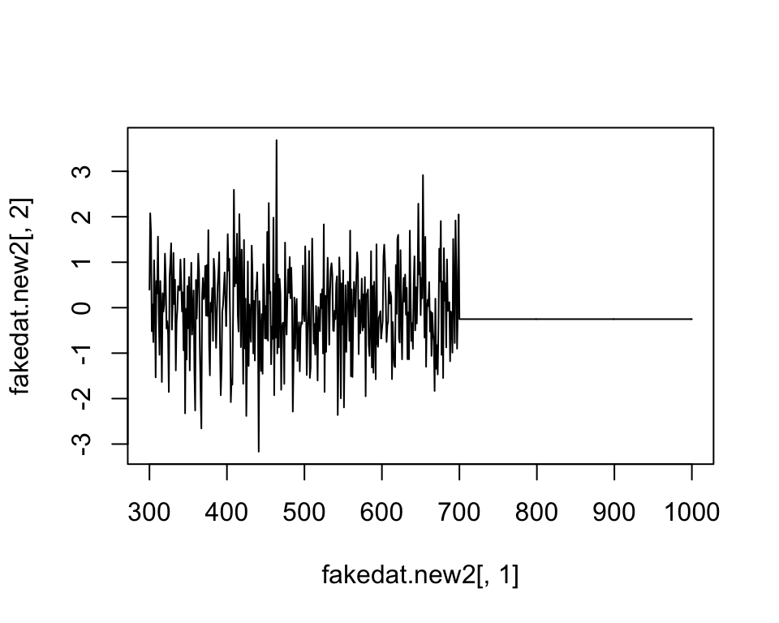
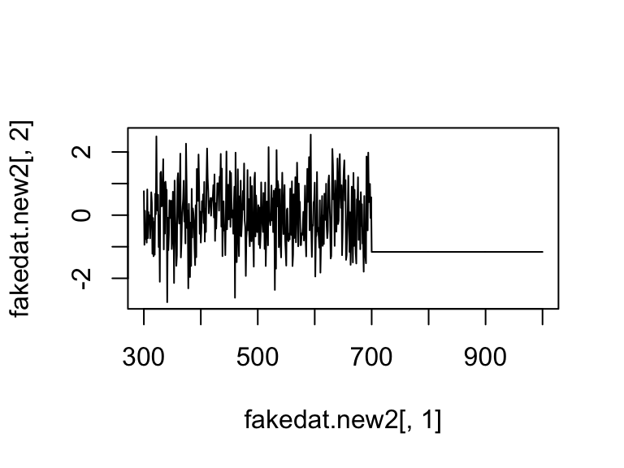
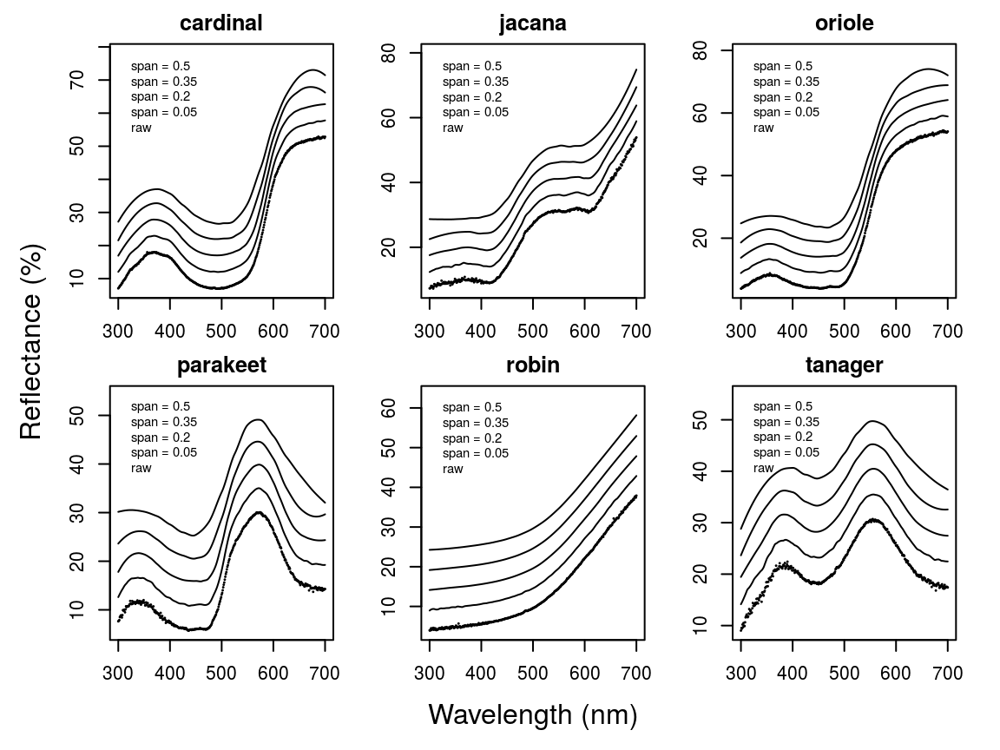

pavo
Rafael Maia, Thomas White, Hugo Gruson, Pierre-Paul Bitton, Chad Eliason
2018-09-08
pavo.RmdIntroduction
pavo is an R package developed with the goal of establishing a flexible and integrated workflow for working with spectral and spatial color data. It includes functions that take advantage of new data classes to work seamlessly from importing raw spectra and images, to visualization and analysis. It provides flexible ways to input spectral data from a variety of equipment manufacturers, process these data, extract variables, and produce publication-quality figures.
pavo was written with the following workflow in mind:
- Organize data by importing and processing spectral and image data (e.g., to remove noise, negative values, smooth curves, etc.).
- Analyze the resulting files, using spectral analyses of shape (hue, saturation, brightness), visual models based on perceptual data, and/or spatial adjacency and boundary strength analyses.
- Visualize the output, with multiple options provided for exploration and analysis.
Below we will show the main functions in the package in example workflows. The development version of pavo can be found on github.
/notes/research/projects/pavo/vignettes/fig/workflow.png)
A non-exhaustive overview of the colour-pattern analysis workflow in pavo, as of version 2.0, displaying some key functions at each stage.
Let’s begin by loading the package.
Organizing Spectral Data
Spectral Dataset Description
The spectral data used in this example are available from github by clicking here. You can download and extract it to follow the vignette.
The data consist of reflectance spectra, obtained using Avantes equipment and software, from seven bird species: Northern Cardinal Cardinalis cardinalis, Wattled Jacana Jacana jacana, Baltimore Oriole Icterus galbula, Peach-fronted Parakeet Aratinga aurea, American Robin Turdus migratorius, and Sayaca Tanager Thraupis sayaca. Several individuals were measured (sample size varies by species), and 3 spectra were collected from each individual. However, the number of individuals measured per species is uneven and the data have additional peculiarities that should emphasize the flexibility pavo offers, as we’ll see below.
In addition, pavo includes three datasets that can be called with the data function. data(teal), data(sicalis), and data(flowers) will all be used in this vignette. See help for more information help(package = "pavo").
Importing
The first thing we need to do is import the spectral data into R using the function getspec(). Since the spectra were obtained using Avantes software, we will need to specify that the files have the .ttt extension. Further, the data is organized in subdirectories for each species. getspec does recursive sampling, and may include the names of the subdirectories in the spectra name if desired. getspec also uses parallel processing when the argument cores is set to a number greater than 1 (currently available only on Linux and Mac). A final issue with the data is that it was collected using a computer with international numbering input, which means it uses commas instead of periods as a decimal separator. We can specify that in the function call.
getspec also allows the use of parallel processing to speed up importing large datasets. This is controlled by the cores argument. If set to 1, single threading will be used (parallel processing not available in Windows, only Linux/Unix and Mac).
The files were downloaded and placed in a directory called /pavo/vignette_data. By default, getspec will search for files in the current folder, but a different one can be specified:
#specs <- getspec("~/pavo/vignette_data/", ext = "ttt", decimal = ",", subdir = TRUE, subdir.names = FALSE)
# 213 files found; importing spectra
# |================================================================================| 100%, ETA 00:00## wl cardinal.0001 cardinal.0002 cardinal.0003
## 1 300 5.7453 8.0612 8.0723
## 2 301 6.0181 8.3926 8.8669
## 3 302 5.9820 8.8280 9.0680
## 4 303 6.2916 8.7621 8.7877
## 5 304 6.6277 8.6819 9.3450
## 6 305 6.3347 9.6016 9.4834
## 7 306 6.3189 9.5712 9.3533
## 8 307 6.7951 9.4650 9.9492
## 9 308 7.0758 9.4677 9.8587
## 10 309 7.2126 10.6172 10.5396## [1] 401 214When pavo imports spectra, it creates an object of class rspec, which inherits attributes from the data.frame class:
## [1] TRUEIf you already have multiple spectra in a single data frame that you’d like to use with pavo functions, you can use the command as.rspec to convert it to an rspec object. The function will attempt to identify the wavelength variable or you can specify the column containing wavelengths with the whichwl argument. The default way that as.rspec handles reflectance data is to interpolate the data in 1-nm bins, as is commonly done for spectral analyses. However, this can be turned off by using: interp = FALSE. As an example, we will create some fake reflectance data, name the column containing wavelengths (in 0.5-nm bins) wavelength rather than wl (required for pavo functions to work) and also put the column containing wavelengths third rather than first.
# Create some fake reflectance data with wavelength column arbitrarily titled
# and not first in the data frame:
fakedat <- data.frame(
refl1 = rnorm(n = 801),
refl2 = rnorm(n = 801),
wavelength = seq(300, 700, by = .5)
)
head(fakedat)## refl1 refl2 wavelength
## 1 -0.032893386 0.5059612 300.0
## 2 -0.478552738 -1.1526035 300.5
## 3 -0.190687886 -1.0708952 301.0
## 4 -0.008977959 -1.9871907 301.5
## 5 -0.443133039 -0.3910143 302.0
## 6 0.032110206 -0.5403221 302.5## [1] FALSE## wavelengths found in column 3## [1] TRUE## wl refl1 refl2
## 1 300 -0.03289339 0.50596119
## 2 301 -0.19068789 -1.07089518
## 3 302 -0.44313304 -0.39101435
## 4 303 -0.52064707 0.84403232
## 5 304 1.42813472 0.07150436
## 6 305 -0.19044804 -0.84504226As can be seen, as.rspec renames the column containing wavelengths, sets it as the first column, interpolates the data in 1-nm bins and converts the data to an rspec object. Note that the same output is returned with specifying whichwl = 3:
## wl refl1 refl2
## 1 300 -0.03289339 0.50596119
## 2 301 -0.19068789 -1.07089518
## 3 302 -0.44313304 -0.39101435
## 4 303 -0.52064707 0.84403232
## 5 304 1.42813472 0.07150436
## 6 305 -0.19044804 -0.84504226Finally, the lim argument allows you to specify the range of wavelengths contained in the input dataset. This is useful either in the case that the dataset doesn’t contain this information (and hence you cannot specify the column with whichwl or automatically find the column with as.rspec). Additionally, it may be useful to focus on a subset of wavelength. In our example, the wavelengths ranged from 300 to 700 nm, however you could also specify a restricted range of wavelengths with lim:
## wavelengths found in column 3
We want to stress that it is important to check the actual wavelengths contained in the data before setting this argument (as.rspec will warn you when wavelengths in the data are not present in the range specified with lim), otherwise as.rspec will assume that wavelengths exist when in fact they may not. For example, if we set lim = c(300, 1000) and plot the results, the reflectance values between 700 and 1000 nm are set to be equal since there is no information at these wavelengths in the original dataset:
## wavelengths found in column 3## Warning in as.rspec(fakedat, lim = c(300, 1000)): Specified wavelength
## limits outside of actual data. Check 'lim' argument.
Subsetting and Merging Spectral Data
Once an rspec object has been created, either by importing raw spectral data or converting a dataset with the as.rspec function, you can subset the spectra based on their names using a modified version of R’s built-in subset function. For example, the following code illustrates how to create an rspec object containing only tanagers:
## wl tanager.0001 tanager.0002 tanager.0003 tanager.0004
## 1 300 10.0618 10.6744 10.1499 13.7473
## 2 301 11.1472 10.8054 9.8003 14.3102
## 3 302 10.7819 10.6134 9.5607 14.4463
## 4 303 11.0210 11.2037 10.4107 15.5533
## 5 304 10.2177 11.2120 9.9452 14.3841
## 6 305 11.5664 11.6135 10.8659 15.6445The subset function here is using partial matching to find all spectra with the string “tanager” in their name. To fully benefit from this flexible subsetting functionality, it is important that you follow a consistent file naming scheme. For example, tanager.14423.belly.001.ttt would indicate the species (tanager), individual ID (14423), body patch (belly) and measurement number (001). Additionally, we suggest that labels used should have the same number of characters, which simplifies character string manipulation and subsetting based on partial matching.
If you prefer not to use partial matching, subset will also work if you provide a logical condition, similar to the default subset behavior in R. For example:
# extract first component of filenames containing species names
spp <- do.call(rbind, strsplit(names(specs), "\\."))[, 1]
# subset
specs.tanager2 <- subset(specs, subset = spp == "tanager")
# compare subsetting methods
all.equal(specs.tanager1, specs.tanager2)## [1] TRUENote that subset will also work with visual model (class vismodel) and colspace (class colspace) objects, as described below.
Another useful function is merge. Let’s say that you have subsetted spectra for tanagers and parakeets, and you would like to re-combine them for an analysis. The following lines of code show how to do this:
specs.tanager <- subset(specs, "tanager")
specs.parakeet <- subset(specs, "parakeet")
specs.new <- merge(specs.tanager, specs.parakeet)Note that this re-combined file (specs.new) has only a single wl column with the merged spectra as columns. Keep in mind that the order of objects in merge will determine the order of columns in the final merged object (i.e. tanagers will be before parakeets).
Processing Spectral Data
Averaging Spectra
As previously described, our data (contained in the specs object) constitutes of multiple individuals, and each was measured three times, as is common to avoid measurement bias. A good way to visualize the repeatability of our measurements is to plot the spectra of each individual separately. The function explorespec provides an easy way of doing so. You may specify the number of spectra to be plotted in the same panel using the argument specreps, and the function will adjust the number of panels per page accordingly. We will exemplify this function using only the 12 cardinal individuals measured:
Result from explorespec, showing the three measurements for each individual cardinal in separate panels
So our first step would be to take the average of each of these three measurements to obtain average individual spectra to be used in further analyses. This is easily accomplished using the aggspec function. The by argument can be either a number (specifying how many specs should be averaged for each new sample) or a vector specifying the identities of the spectra to be combined (see below):
## wl cardinal cardinal.1 cardinal.2
## 1 300 7.292933 5.676700 6.387233
## 2 301 7.759200 5.806700 6.698200
## 3 302 7.959333 5.858467 6.910500
## 4 303 7.947133 6.130267 7.357567
## 5 304 8.218200 6.127933 7.195267## [1] 401 72Now we’ll use the aggspec function again, but this time to take the average spectrum for each species. However, each species has a different number of samples, so we can’t use the by argument as before. Instead we will use regular expressions to create a species name vector by removing the numbers that identify individual spectra:
# create a vector with species identity names
spp <- gsub('\\.[0-9].*$', '', names(mspecs))[-1]
table(spp)## spp
## cardinal jacana oriole parakeet robin tanager
## 12 9 9 13 10 18Instead, we are going to use the spp vector we created to tell the aggspec function how to average the spectra in mspec:
## wl cardinal jacana oriole parakeet robin tanager
## 1 300 7.05 7.33 3.89 7.63 3.98 9.02
## 2 301 7.25 7.35 3.91 7.75 3.91 9.53
## 3 302 7.44 7.45 4.13 7.89 4.19 9.41
## 4 303 7.82 8.09 4.39 8.49 4.51 10.20
## 5 304 7.84 7.71 4.18 8.66 4.07 9.68
Result from explorespec for species means
Normalizing and Smoothing Spectra
Data obtained from spectrometers often requires further processing before analysis and/or publication. For example, electrical noise can produce unwanted “spikes”" in reflectance curves. The pavo function procspec can handle a variety of processing techniques. For example, the reflectance curve from the parakeet is noisy in the short (300-400 nm) and long (650-700 nm) wavelength ranges (see Figure below, black line). To eliminate this noise, we will use local regression smoothing implemented by the loess.smooth function in R, wrapped in the opt="smooth" argument of procspec.
But first, let’s use the plotsmooth function to determine a suitable smoothing parameter (span). This function allows you to set a minimum and maximum smoothing parameter to try and plots the resulting curves against the unsmoothed (raw) data in a convenient multipanel figure.

From the resulting plot, we can see that span = 0.2 is the minimum amount of smoothing to remove spectral noise while preserving the original spectral shape. Based on this value, we will now use the opt argument in procspec to smooth data for further plotting and analysis.
## processing options applied:
## smoothing spectra with a span of 0.2plot(sppspec[, 5] ~ sppspec[, 1],
type = "l", lwd = 10, col = "grey",
xlab = "Wavelength (nm)", ylab = "Reflectance (%)"
)
lines(spec.sm[, 5] ~ sppspec[, 1], col = "red", lwd = 2)Result for raw (grey line) and smoothed (red line) reflectance data for the parakeet
We can also try different normalizations. Options include subtracting the minimum reflectance of a spectrum at all wavelengths (effectively making the minimum reflectance equal to zero, opt = "min", left panel, below) and making the reflectance at all wavelength proportional to the maximum reflectance (i.e. setting maximum reflectance to 1; opt = "max", center panel, below). Note that the user can specify multiple processing options that will be applied sequentially to the spectral data by procspec (right panel, below).
## processing options applied:
## Scaling spectra to a maximum value of 1## processing options applied:
## Scaling spectra to a minimum value of zero## processing options applied:
## Scaling spectra to a minimum value of zero
## Scaling spectra to a maximum value of 1# Plot results
par(mfrow = c(1, 3), mar = c(2, 2, 2, 2), oma = c(3, 3, 0, 0))
plot(specs.min[, 5] ~ c(300:700), xlab = "", ylab = "", type = "l")
abline(h = 0, lty = 2)
plot(specs.max[, 5] ~ c(300:700), ylim = c(0, 1), xlab = "", ylab = "", type = "l")
abline(h = c(0, 1), lty = 2)
plot(specs.str[, 5] ~ c(300:700), type = "l", xlab = "", ylab = "")
abline(h = c(0, 1), lty = 2)
mtext("Wavelength (nm)", side = 1, outer = TRUE, line = 1)
mtext("Reflectance (%)", side = 2, outer = TRUE, line = 1)Results for min (left), max (center), and both normalizations (right)
Binning and PCA Analysis of Spectral Shape
Another intended usage of procspec is preparation of spectral data for variable reduction (for example, using Principal Component Analysis, or PCA). Following Cuthill et al. (1999), we can use opt = 'center' to center spectra to have a mean reflectance of zero (thus removing brightness as a dominant variable in the PCA) and then bin the spectra into user-defined bins (using the opt = 'bin' argument) to obtain a dataframe suitable for the PCA.
## processing options applied:
## Centering spectra to a mean of zero
## binned spectra to 21-nm intervalshead(spec.bin)
spec.bin <- t(spec.bin) # transpose so wavelength are variables for the PCA
colnames(spec.bin) <- spec.bin[1, ] # names variables as wavelength bins
spec.bin <- spec.bin[-1, ] # remove 'wl' column
pca1 <- prcomp(spec.bin, scale = TRUE)## Importance of components:
## PC1 PC2 PC3 PC4 PC5 PC6
## Standard deviation 3.6041 1.9853 1.5800 0.66314 0.36427 2.705e-16
## Proportion of Variance 0.6495 0.1971 0.1248 0.02199 0.00663 0.000e+00
## Cumulative Proportion 0.6495 0.8466 0.9714 0.99337 1.00000 1.000e+00As can be seen by the summary, PC1 explains approximately 64% of the variation in spectral shape and describes the relative amount of long wavelengths reflected. The flexibility of R and pavo’s plotting capabilities allows you to sort spectra by another variable (e.g., PC1 loading) and then plot in a stacked format using the plot function.
# Generate colors from spectra
colr <- spec2rgb(sppspec)
wls <- as.numeric(colnames(spec.bin))
# Rank specs by PC1
sel <- rank(pca1$x[, 1])
sel <- match(names(sort(sel)), names(sppspec))
# Plot results
par(mfrow = c(1, 2), mar = c(2, 4, 2, 2), oma = c(2, 0, 0, 0))
plot(pca1$r[, 1] ~ wls, type = "l", ylab = "PC1 loading")
abline(h = 0, lty = 2)
plot(sppspec, select = sel, type = "s", col = spec2rgb(sppspec))
mtext("Wavelength (nm)", side = 1, outer = TRUE, line = 1)Plot of PC1 loading versus wavelength (left) and species mean spectra sorted vertically from lowest to highest PC1 value (right; values on right hand axis are column identities).
Dealing With Negative Values in Spectra
Negative values in spectra are unwanted, as they are uninterpretable (how can there be less than zero light reflected by a surface?) and can affect estimates of color variables. Nonetheless, certain spectrometer manufacturers allow negative values to be saved. To handle negative values, the procspec function has an argument called fixneg. The two options available are (1) adding the absolute value of the most negative value to the whole spectrum with addmin, and (2) changing all negative values to zero with zero.
# Create a duplicate spectrum and add some negative values
refl <- sppspec[, 7] - 20
testspecs <- as.rspec(cbind(c(300:700), refl))## wavelengths found in column 1## processing options applied:
## Negative value correction: added min to all reflectance## processing options applied:
## Negative value correction: converted negative values to zero# Plot it
par(mar = c(2, 2, 2, 2), oma = c(3, 3, 0, 0))
layout(cbind(c(1, 1), c(2, 3)), widths = c(2, 1, 1))
plot(testspecs, select = 2, ylim = c(-10, 30))
abline(h = 0, lty = 3)
plot(testspecs.fix1, select = 2, ylim = c(-10, 30))
abline(h = 0, lty = 3)
plot(testspecs.fix2, select = 2, ylim = c(-10, 30))
abline(h = 0, lty = 3)
mtext("Wavelength (nm)", side = 1, outer = TRUE, line = 1)
mtext("Reflectance (%)", side = 2, outer = TRUE, line = 1)
Plots showing original reflectance curve including negative values (left) and two processed curves using fixneg = addmin (top right) and fixneg = zero (bottom right).
These manipultions may have different effects on the final spectra, which the user should keep in mind and use according to the final goal of the analysis. For example, by adding the minimum reflectance to all other wavelength, the shape of the curve is preserved, but the maximum reflectance is much higher. On the other hand, substituting negative values with zero preserves absolute reflectance values, but may cause the spectral shape to be lost. The “best” transformation will depend on the severity of the problem of negative values and the goal of the analysis (e.g. will reflectance intensity be used? What is more important, to preserve reflectance values or the total shape of the curve?). Which correction to use would also depend on the source of the negative values. If they are thought to originate from improper calibration of the spectrophotometer, fixneg = addmin would be appropriate. However, if they are thought to originate from electric noise, fixneg = zero would be more appropriate.
Visualizing Spectral Data
pavo offers three main plotting functions. The main one is plot, which combines several different options in a flexible framework for most commonly used purposes. The explorespec function aims at providing initial exploratory analysis, as demonstrated in Section 1. Finally, aggplot provides a simple framework for publication-quality plots of aggregated spectral data.
The plot Function Options
Since pavo uses the class rspec to identify spectral data, the function plot.rspec can be called simply by calling plot(data). If the object is not of class rspec the multivariate visualization methods will not work as expected, so it might be useful to check the data using is.rspec and convert with as.rspec if necessary.
We have implemented three methods of visualizing spectral data using plot:
- Overlay: all spectra plotted with same x- and y-axis
- Stack: spectra plotted with same x-axis but arranged vertically along y-axis
- Heatmap: false color map to illustrate three dimensional data
These options are in addition to the exploratory plotting offered by explorespec, as seen in the figures in section 1. To showcase the capabilities of plot.rspec, we will use the teal dataset included in pavo. This dataset consists of reflectance spectra from the iridescent wing patch of a green-winged teal (Anas carolinensis). Reflectance measurements were taken between 300 and 700 nm at different incident angles, ranging from 15o to 70o (in 5o increments) (Eliason & Shawkey, 2012).
The overlay Option
We can start out by visualizing these spectra with the overlay option in plot. Another neat option pavo offers is to convert reflectance spectra to their approximate perceived color, by using the function spec2rgb. This can make for some very interesting plots and even exploratory data analysis, as shown above.
Overlay plot of the teal angle-dependent reflectance with colors of each curve being an approximation of the perceived color.
The stack Option
Another option is the stack plot (again, with human vision approximations of the color produced by the spectra using spec2rgb).
## processing options applied:
## Scaling spectra to a minimum value of zero
## Scaling spectra to a maximum value of 1par(mfrow = c(1, 2), mar = c(2, 2, 2, 2), oma = c(2, 2, 0, 0))
plot(teal, type = "s", col = spec2rgb(teal))
plot(teal.norm, type = "s", col = spec2rgb(teal))
mtext("Wavelength (nm)", side = 1, outer = T, line = 1)
mtext("Cumulative reflectance (A.U.)", side = 2, outer = T, line = 1)Stack plot of the raw (left) and normalized (right) teal angle-dependent reflectance
Note that in the above figure, the y axis to the right includes the index of each spectrum. This makes it easier to identify and subset specific spectra or groups of spectra using the select argument in plot.rspec. Note also that the first index is actually 2, preserving the sequence in the original dataset (since the first column is wavelength). Though this may seem confusing at first (“why is my first spec number 2?”") this preserves subsetting hierarchy: using plot(teal, select = 2) will show the same spectra that would be selected if you use teal[ ,2].
The heatmap Option
Since this dataset is three-dimensional (containing wavelengths, reflectance values and incident angles) we can also use the heatmap function. First, it will be necessary to define a vector for the incident angles each spectrum was measured at:
Next, we will smooth the data with procspec and plot as a false color map (heatmap):
## processing options applied:
## smoothing spectra with a span of 0.25plot(teal.sm,
type = "h", varying = angles,
ylab = expression(paste("Incident angle (", degree, ")")),
las = 1, useRaster = TRUE
)
Heatmap plot for angle-resolved reflectance measurements of the green-winged teal.
These plots can be very useful to observe changes over time, for example, or any other type of continuous variation.
The aggplot Function
aggplot has a very similar interface to aggspec, allowing for quick plotting of aggregated spectra combined by a factor, such as species, sex, experimental treatment, and so on. Its main output is a plot with lines of group mean spectra outlined by a shaded area indicating some measure of variability, such as the standard deviation of the group. Note that functions that aren’t already implemented in R must be passed like they would be to functions such as apply (e.g., function(x)sd(x)/sqrt(length(x)) in the example below).
par(mfrow = c(1, 2), mar = c(4, 4, 2, 2), oma = c(2, 0, 0, 0))
# Plot using median and standard deviation, default colors
aggplot(mspecs, spp, FUN.center = median, alpha = 0.3, legend = TRUE)
# Plot using mean and standard error, in greyscale
aggplot(mspecs, spp,
FUN.error = function(x) sd(x) / sqrt(length(x)),
lcol = 1, shadecol = "grey", alpha = 0.7
)
Example plots created using aggplot. Left: using median, standard deviation, and colored lines. Right: using mean, standard error, and greyscale
Analyzing Spectral Data
Overview
pavo offers two main approaches for spectral data analysis. First, color variables can be calculated based on the shape of the reflectance spectra. By using special R classes for spectra data frame objects, this can easily be done using the summary function with an rspec object (see below). The function peakshape also returns descriptors for individual peaks in spectral curves, as outlined below.
Second, reflectance spectra can be analyzed by accounting for the visual system receiving the color signal, therefore representing reflectance spectra as perceived colors. To that end, we have implemented a suite of visual models and colorspaces including; the receptor-noise limited model of model of Vorobyev & Osorio (1998), Endler’s (1990) segment classification method, flexible di- tri- and tetra-chromatic colorspaces, the Hexagon model of Chittka (1992), the color-opponent coding space of Backhaus (1991), CIELAB and CIEXYZ spaces, and the categorical model of Troje (1992).
Spectral Shape Analysis
Colorimetric Variables
Obtaining colorimetric variables (peratining to hue, saturation and brightness/value) is pretty straightforward in pavo. Since reflectance spectra is stored in an object of class rspec, the summary function recognizes the object as such and extracts 23 variables, as outlined in Montgomerie (2006). Though outlined in a book chapter on bird coloration, these variables are broadly applicable to any reflectance data, particularly if the taxon of interest has color vision within the UV-human visible range.
The description and formulas for these variables can be found by running ?summary.rspec.
## B1 B2 B3 S1U S1V S1B S1G S1Y S1R S2 S3 S4
## cardinal 8984.27 22.40 52.70 0.17 0.19 0.12 0.19 0.25 0.53 7.61 0.30 0.20
## jacana 9668.50 24.11 53.79 0.10 0.11 0.19 0.31 0.25 0.41 7.10 0.25 0.05
## oriole 9108.47 22.71 54.16 0.07 0.08 0.06 0.33 0.36 0.55 14.51 0.30 0.09
## parakeet 6020.73 15.01 29.87 0.17 0.19 0.14 0.42 0.34 0.27 5.11 0.45 0.27
## robin 5741.39 14.32 37.86 0.09 0.10 0.14 0.27 0.27 0.51 9.13 0.30 NA
## tanager 8515.25 21.24 30.48 0.20 0.24 0.26 0.32 0.24 0.22 3.23 0.33 0.17
## S5 S6 S7 S8 S9 S10 H1 H2 H3 H4 H5
## cardinal 4003.47 45.77 -0.21 2.04 0.84 0.41 700 419 587 0.02 581
## jacana 3314.02 46.21 -0.31 1.92 0.73 0.10 700 593 529 0.72 468
## oriole 5233.01 50.42 -0.58 2.22 0.92 0.19 700 382 551 0.41 544
## parakeet 1894.02 24.02 0.67 1.60 0.59 0.44 572 618 634 0.98 506
## robin 2532.41 33.71 -0.11 2.35 0.81 NA 700 NA 593 0.42 631
## tanager 1106.47 21.03 -0.79 0.99 -0.05 0.17 557 594 362 1.53 518summary also takes an additional argument subset which if changed from the default FALSE to TRUE will return only the most commonly used colorimetrics (Andersson 2006). summary can also take a vector of color variable names, which can be used to filter the results
## B2 S8 H1
## cardinal 22.40 2.04 700
## jacana 24.11 1.92 700
## oriole 22.71 2.22 700
## parakeet 15.01 1.60 572
## robin 14.32 2.35 700
## tanager 21.24 0.99 557## B1 B2 B3
## cardinal 8984.27 22.40 52.70
## jacana 9668.50 24.11 53.79
## oriole 9108.47 22.71 54.16
## parakeet 6020.73 15.01 29.87
## robin 5741.39 14.32 37.86
## tanager 8515.25 21.24 30.48Peak Shape Descriptors
Particularly in cases of reflectance spectra that have multiple discrete peaks (in which case the summary function will only return variables based on the tallest peak in the curve), it might be useful to obtain variables that describe individual peak’s properties. The peakshape function identifies the peak location (H1), returns the reflectance at that point (B3), and identifies the wavelengths at which the reflectance is half that at the peak, calculating the wavelength bandwidth of that interval (the Full Width at Half Maximum, or FWHM). The function also returns the half widths, which are useful when the peaks are located near the edge of the measurement limit and half maximum reflectance can only be reliably estimated from one of its sides.
If this all sounds too esoteric, fear not: peakshape has the option of returning plots indicating what it’s calculating. The vertical continuous red line indicates the peak location, the horizontal continuous red line indicates the half-maximum reflectance, and the distance between the dashed lines (HWHM.l and HWHM.r) is the FWHM:
Plots from peakshape
## id B3 H1 FWHM HWHM.l HWHM.r incl.min
## 1 cardinal 52.70167 700 NA 113 NA Yes
## 2 jacana 53.78744 700 NA 171 NA Yes
## 3 oriole 54.15508 700 NA 149 NA Yes
## 4 parakeet 29.86504 572 125 62 63 Yes
## 5 robin 37.85542 700 NA 107 NA Yes
## 6 tanager 30.48108 557 281 195 86 YesAs it can be seen, the variable FWHM is meaningless if the curve doesn’t have a clear peak. Sometimes, such as in the case of the Cardinal (Above figure, first panel), there might be a peak which is not the point of maximum reflectance of the entire spectral curve. The half-width can also be erroneously calculated when there are two peaks, as can be seen in the case of the Tanager (Above figure, last panel). In this case, it’s useful to set wavelength limits when calculating the FWHM by using the lim argument. peakshape also offers a select argument to facilitate subsetting the spectra data frame to, for example, focus on a single reflectance peak:
Plot from peakshape, setting the wavelength limits to 300 and 500 nm
## id B3 H1 FWHM HWHM.l HWHM.r incl.min
## 1 cardinal 17.84381 369 99 45 54 YesVisual Modelling
Overview
As of version 1.0, all visual and colorspace modelling and plotting options are wrapped into four main function: vismodel, colspace, coldist, and plot. As detailed below, these functions cover the basic processes common to most modelling approaches. Namely, the estimation of quantum catches, their conversion to an appropriate space, estimating the distances between samples, and visualising the results. As a brief example, a typical workflow for modelling might use:
-
vismodelto estimate photoreceptor quantum catches. The assumptions of visual models may differ dramatically, so be sure to select options that are appropriate for your intended use.
-
colspaceto convert the results ofvismodel(or user-provided quantum catches) into points in a given colorspace, specified with thespaceargument. If nospaceargument is provided,colspacewill automatically select the di-, tri- or tetrahedral colorspace, depending on the nature of the input data. The result ofcolspacewill be an object of classcolspace(that inherits fromdata.frame), and will contain the location of stimuli in the selected space along with any associated color variables. -
coldistto estimate the color distances between points in a colourspace (if the input is fromcolspace), or the ‘perceptual’, noise-weighted distances in the receptor-noise limited model (if the input is fromvismodelwhererelative = FALSE). -
plotthe output.plotwill automatically select the appropriate visualisation based on the inputcolspaceobject, and will also accept various graphical parameters depending on the colorspace (see?plot.colspaceand links therein for details).
Accessing and Plotting In-built Spectral Data
All in-built spectral data in pavo can be easily retrieved and/or plotted via the sensdata() function. These data can be visualised directly by including plot = TRUE, or assigned to an object for subsequent use, as in:
## wl musca.u musca.s musca.m musca.l md.r1
## 1 300 0.01148992 0.006726680 0.001533875 0.001524705 0.001713692
## 2 301 0.01152860 0.006749516 0.001535080 0.001534918 0.001731120
## 3 302 0.01156790 0.006773283 0.001536451 0.001545578 0.001751792
## 4 303 0.01160839 0.006798036 0.001537982 0.001556695 0.001775960
## 5 304 0.01165060 0.006823827 0.001539667 0.001568283 0.001803871
## 6 305 0.01169510 0.006850712 0.001541499 0.001580352 0.001835777Visual Phenotypes
-
pavocontains numerous di-, tri- and tetrachromatic visual systems, to accompany the suite of new models. The full complement of included systems are accessable via thevismodel()argumentvisual: -
avg.uvaverage ultraviolet-sensitive avian (tetrachromat) -
avg.vaverage violet-sensitive avian (tetrachromat) -
bluetitThe blue tit Cyanistes caeruleus (tetrachromat) -
starThe starling Sturnus vulgaris (tetrachromat) -
pfowlThe peafowl Pavo cristatus (tetrachromat) -
apisThe honeybee Apis mellifera (trichromat) -
ctenophorusThe ornate dragon lizard Ctenophorus ornatus (trichromat) -
canisThe canid Canis familiaris (dichromat) -
muscaThe housefly Musca domestica (tetrachromat) -
cie22-degree color matching functions for CIE models of human color vision (trichromat) -
cie1010-degree color matching functions for CIE models of human color vision (trichromat) -
segmentA generic ‘viewer’ with broad sensitivities for use in the segment analysis of Endler (1990) (tetrachromat) -
habronattusThe jumping spider Habronattus pyrrithrix (trichromat). -
rhinecanthusThe triggerfish Rhinecanthus aculeatus (trichromat).
Estimating Quantum Catch
Numerous models have been developed to understand how colors are perceived and discriminated by an individual’s or species’ visual system (Described in detail in Endler 1990; Renoult et al. 2015; Vorobyev 1998). In essence, these models take into account the receptor sensitivity of the different receptors that make the visual system in question and quantify how a given color would stimulate those receptors individually, and their combined effect on the perception of color. These models also have an important component of assuming and interpreting the chromatic component of color (hue and saturation) to be processed independently of the achromatic (brightness, or luminance) component. This provides a flexible framework allowing for a tiered model construction, in which information on aspects such as different illumination sources, backgrounds, and visual systems can be considered and compared.
To apply any such model, we first need to quantify receptor excitation and then consider how the signal is being processed, while possibly considering the relative density of different cones and the noise-to-signal ratio.
To quantify the stimulation of cones by the emitted color, we will use the pavo function vismodel. This function takes an rspec dataframe as a minimal input, and the user can either select from the available options or input its own data for the additional arguments in the function:
-
visual: the visual system to be used. Available inbuilt options are detailed above, or the user may include their own dataframe, with the first column being the wavelength range and the following columns being the absorbance at each wavelength for each cone type (see below for an example). -
achromatic: Either a receptor’s sensitivity data (available options include the blue tit, chicken, and starling double-cones, and the housefly’s R1-6 receptor), which can also be user-defined as above; or the longest-wavelength receptor, the sum of the two longest-wavelength receptors, or the sum of all receptors can be used. Alternatively,nonecan be specified for no achromatic stimulation calculation. -
illum: The illuminant being considered. By default, it considers an ideal white iluminant, but implemented options are a blue sky, standard daylight, and forest shade illuminants. A vector of same length as the wavelength range being considered can also be used as the input. -
trans: Models of the effects of light transmission (e.g. through noisy environments or ocular filters). The argument defaults toideal(i.e. no effect), though users can also use the built-in options ofbluetitorblackbirdto model the ocular transmission of blue tits/blackbirds, or specify a user-defined vector containing transmission spectra. -
qcatch: This argument determines what photon catch data should be returned-
Qi: The receptor quantum catches, calculated for receptor \(i\) as: \[Q_i = \int_\lambda{R_i(\lambda)S(\lambda)I(\lambda)d\lambda}\] Where \(\lambda\) denotes the wavelength, \(R_i(\lambda)\) the spectral sensitivity of receptor \(i\), \(S (\lambda)\) the reflectance spectrum of the color, and \(I(\lambda)\) the illuminant spectrum. -
fi: The receptor quantum catches transformed according to Fechner’s law, in which the signal of the receptor is proportional to the logarithm of the quantum catch i.e. \(f_i = ln(Q_i)\) -
Ei: the hyperbolic transform (a simplification of the Michaelis–Menton photoreceptor equation), where \[E_i = \frac{Q_i}{Q_i + 1}\].
-
-
bkg: The background being considered. By default, it considers an idealized background (i.e. wavelength-independent influence of the background on color). A vector of same length as the wavelength range being considered can also be used as the input. -
vonkries: a logical argument which determines if the von Kries transformation (which normalizes receptor quantum catches to the background, thus accounting for receptor adaptation) is to be applied (defaults toFALSE). IfTRUE, \(Q_i\) is multiplied by a constant \(k\), which describes the von Kries transformation: \[k_i = \frac{1} { \int_\lambda{R_i(\lambda)S^b(\lambda)I(\lambda)d\lambda }, }\] Where \(S^b\) denotes the reflectance spectra of the background. -
scale: This argument defines how the illuminant should be scaled. The scale of the illuminant is critical of receptor noise models in which the signal intensity influences the noise (see Receptor noise section, below). Illuminant curves should be in units of \(\mu mol.s^{-1}.m^{-2}\) in order to yield physiologically meaningful results. (Some software return illuminant information values in \(\mu Watt.cm^{-2}\), and must be converted to \(\mu mol.s^{-1}.m^{-2}\). This can be done by using theirrad2fluxandflux2irradfunctions.) Therefore, if the user-specified illuminant curves are not in these units (i.e. are measured proportional to a white standard, for example), thescaleparameter can be used as a multiplier to yield curves that are at least a reasonable approximation of the illuminant value. Commonly used values are 500 for dim conditions and 10,000 for bright conditions. -
relative: IfTRUE, it will make the cone stimulations relative to their sum. This is appropriate for colorspace models such as the avian tetrahedral colorspace (Goldsmith 1990, Stoddard 2008; For the photon catch and neural noise model, it is important to set}relative = FALSE).
All visual models begin with the estimation of receptor quantum catches. The requirements of models may differ significantly of course, so be sure to consult the function documentation and original publications. For this example, we will use the average reflectance of the different species to calculate the raw stimulation of retinal cones, considering the avian average UV visual system, a standard daylight illumination, and an idealized background.
vismod1 <- vismodel(sppspec,
visual = "avg.uv", achromatic = "bt.dc",
illum = "D65", relative = FALSE
)
vismod1## u s m l lum
## cardinal 0.0341 0.0649 0.1297 0.4187 0.1939
## jacana 0.0199 0.1484 0.2923 0.3313 0.2709
## oriole 0.0139 0.0375 0.2649 0.4807 0.2755
## parakeet 0.0186 0.0611 0.2542 0.2171 0.2042
## robin 0.0109 0.0622 0.1413 0.2420 0.1501
## tanager 0.0418 0.1572 0.2747 0.2284 0.2346Since there are multiple parameters that can be used to customize the output of vismodel, as detailed above, for convenience these can be returned by using summary in a vismodel object:
## visual model options:
## * Quantal catch: Qi
## * Visual system, chromatic: avg.uv
## * Visual system, achromatic: bt.dc
## * Illuminant: D65, scale = 1 (von Kries color correction not applied)
## * Background: ideal
## * Transmission: ideal
## * Relative: FALSE## u s m l
## Min. :0.01093 Min. :0.03749 Min. :0.1297 Min. :0.2171
## 1st Qu.:0.01509 1st Qu.:0.06137 1st Qu.:0.1695 1st Qu.:0.2318
## Median :0.01925 Median :0.06353 Median :0.2595 Median :0.2866
## Mean :0.02321 Mean :0.08854 Mean :0.2262 Mean :0.3197
## 3rd Qu.:0.03059 3rd Qu.:0.12753 3rd Qu.:0.2722 3rd Qu.:0.3969
## Max. :0.04177 Max. :0.15716 Max. :0.2923 Max. :0.4807
## lum
## Min. :0.1501
## 1st Qu.:0.1965
## Median :0.2194
## Mean :0.2215
## 3rd Qu.:0.2618
## Max. :0.2755We can visualize what vismodel is doing when estimating quantum catches by comparing the reflectance spectra to the estimates they are generating:
par(mfrow = c(2, 6), oma = c(3, 3, 0, 0))
layout(rbind(c(2, 1, 4, 3, 6, 5), c(1, 1, 3, 3, 5, 5), c(8, 7, 10, 9, 12, 11), c(7, 7, 9, 9, 11, 11)))
sppspecol <- as.character(spec2rgb(sppspec))
for (i in 1:6) {
par(mar = c(2, 2, 2, 2))
plot(sppspec, select = i + 1, col = sppspecol[i], lwd = 3, ylim = c(0, 100))
par(mar = c(4.1, 2.5, 2.5, 2))
barplot(as.matrix(vismod1[i, 1:4]), yaxt = "n", col = "black")
}
mtext("Wavelength (nm)", side = 1, outer = TRUE, line = 1)
mtext("Reflectance (%)", side = 2, outer = TRUE, line = 1)Plots of species mean reflectance curves with corresponding relative usml cone stimulations (insets).
As described above, vismodel also accepts user-defined visual systems, background and illuminants. We will illustrate this by showcasing the function sensmodel, which models spectral sensitivities of retinas based on their peak cone sensitivity, as described in Govardovskii et al. (2000) and Hart & Vorobyev (2005). sensmodel takes several optional arguments, but the main one is a vector containing the peak sensitivities for the cones being modeled. Let’s model an idealized dichromat visual system, with cones peaking in sensitivity at 350 and 650 nm:
idealizeddichromat <- sensmodel(c(350, 650))
plot(idealizeddichromat, col = spec2rgb(idealizeddichromat), ylab = "Absorbance")
Idealized dichromat photoreceptors created using sensmodel.
## lmax350 lmax650
## [1,] 0.1458 0.3519
## [2,] 0.0916 0.3179
## [3,] 0.0698 0.3776
## [4,] 0.1058 0.1727
## [5,] 0.0473 0.2175
## [6,] 0.1644 0.2149The Receptor Noise Model
The receptor-noise limited model of Vorobyev (1998, 2001) offers a basis for estimating the ‘perceptual’ distance between coloured stimuli (depending on available physiological and behavioural data), and assumes that the simultaneous discrimination of colors is fundamentally limited by photoreceptor noise. Color distances under the RNL model can be calculated by using the inverse of the noise-to-signal ratio, known as the Weber fraction (\(w_i\) for each cone \(i\)). The Weber fraction can be calculated from the noise-to-signal ratio of cone \(i\) (\(v_i\)) and the relative number of receptor cells of type \(i\) within the receptor field (\(n_i\)):
\[w_i = \frac{v_i}{\sqrt{n_i}}\]
\(w_i\) is the value used for the noise when considering only neural noise mechanisms. Alternatively, the model can consider that the intensity of the color signal itself contributes to the noise (photoreceptor, or quantum, noise). In this case, the noise for a receptor \(i\) is calculated as:
\[w_i = \sqrt{\frac{v_i^2}{\sqrt{n_i}} + \frac{2}{Q_a+Q_b}}\]
where \(a\) and \(b\) refer to the two color signals being compared. Note that when the values of \(Q_a\) and \(Q_b\) are very high, the second portion of the equation tends to zero, and the both formulas should yield similar results. Hence, it is important that the quantum catch are calculated in the appropriate illuminant scale, as described above.
Color distances are obtained by weighting the Euclidean distance of the photoreceptor quantum catches by the Weber fraction of the cones (\(\Delta S\)). These measurements are in units of Just Noticeable Differences (JNDs), where distances over a certain threshold (usually 1) are considered to be discernible under the conditions considered (e.g., backgrounds, illumination). The equations used in these calculations are:
For dichromats: \[\Delta S = \sqrt{\frac{(\Delta f_1 - \Delta f_2)^2}{w_1^2+w_2^2}}\]
For trichromats: \[\Delta S = \sqrt{\frac{w_1^2(\Delta f_3 - \Delta f_2)^2 + w_2^2(\Delta f_3 - \Delta f_1)^2 + w_3^2(\Delta f_1 - \Delta f_2)^2 }{ (w_1w_2)^2 + (w_1w_3)^2 + (w_2w_3)^2 }}\]
For tetrachromats: \[\Delta S = \sqrt{(w_1w_2)^2(\Delta f_4 - \Delta f_3)^2 + (w_1w_3)^2(\Delta f_4 - \Delta f_2)^2 + (w_1w_4)^2(\Delta f_3 - \Delta f_2)^2 + \\ (w_2w_3)^2(\Delta f_4 - \Delta f_1)^2 + (w_2w_4)^2(\Delta f_3 - \Delta f_1)^2 + (w_3w_4)^2(\Delta f_2 - \Delta f_1)^2 / \\ ((w_1w_2w_3)^2 + (w_1w_2w_4)^2 + (w_1w_3w_4)^2 + (w_2w_3w_4)^2)}\]
For the chromatic contrast. The achromatic contrast (\(\Delta L\)) can be calculated based on the double cone or the receptor (or combination of receptors) responsible for chromatic processing by the equation:
\[\Delta L = \frac{\Delta f}{w}\]
Perceptual Distances with coldist
pavo implements the noise-weighted color distance calculations in the function coldist, assuming that raw receptor quantum catches are provided (via relative = FALSE in vismodel()). For the achromatic contrast, coldist uses n4 to calculate \(w\) for the achromatic contrast. Note that even if \(Q_i\) is chosen, values are still log-transformed. This option is available in case the user wants to specify a data frame of quantum catches that was not generated by vismodel as an input. In this case, the argument qcatch should be used to inform the function if \(Q_i\) or \(f_i\) values are being used (note that if the imput to coldist is an object generated using the vismodel function, this argument is ignored.) The type of noise to be calculated can be selected from the coldist argument noise (which accepts either "neural" or "quantum").
coldist(vismod1,
noise = "neural", achro = TRUE, n = c(1, 2, 2, 4),
weber = 0.1, weber.achro = 0.1
)## patch1 patch2 dS dL
## 1 cardinal jacana 8.423965 3.3449627
## 2 cardinal oriole 7.905876 3.5110820
## 3 cardinal parakeet 7.999730 0.5177495
## 4 cardinal robin 5.805562 2.5606167
## 5 cardinal tanager 10.100311 1.9068807
## 6 jacana oriole 10.151253 0.1661193
## 7 jacana parakeet 4.231570 2.8272132
## 8 jacana robin 3.503769 5.9055794
## 9 jacana tanager 5.126266 1.4380820
## 10 oriole parakeet 8.135793 2.9933325
## 11 oriole robin 7.220505 6.0716987
## 12 oriole tanager 13.608253 1.6042013
## 13 parakeet robin 4.606847 3.0783661
## 14 parakeet tanager 5.969760 1.3891312
## 15 robin tanager 7.688707 4.4674974## patch1 patch2 dS
## 1 cardinal jacana 2.0993283
## 2 cardinal oriole 4.6567462
## 3 cardinal parakeet 2.2575457
## 4 cardinal robin 3.7236780
## 5 cardinal tanager 3.5417700
## 6 jacana oriole 2.5574178
## 7 jacana parakeet 4.3568740
## 8 jacana robin 1.6243496
## 9 jacana tanager 5.6410983
## 10 oriole parakeet 6.9142918
## 11 oriole robin 0.9330682
## 12 oriole tanager 8.1985162
## 13 parakeet robin 5.9812236
## 14 parakeet tanager 1.2842244
## 15 robin tanager 7.2654480Where dS is the chromatic contrast (\(\Delta S\)) and dL is the achromatic contrast (\(\Delta L\)). Note that, by default, achro = FALSE, so dL isn’t included in the second result (this is to maintain consistency since, in the vismodel function, the achromatic argument defaults to none). As expected, values are really high under the avian color vision, since the colors of these species are quite different and because of the enhanced discriminatory ability with four compared to two cones.
coldist also has a subset argument, which is useful if only certain comparisons are of interest (for example, of color patches against a background, or only comparisons among a species or body patch). subset can be a vector of length one or two. If only one subsetting option is passed, all comparisons against the matching argument are returned (useful in the case of comparing to a background, for example). If two values are passed, comparisons will only be made between samples that match that rule (partial string matching and regular expressions are accepted). For example, compare:
to:
Converting receptor noise-corrected distances to Cartesian coordinates
You can convert distances in JND back to Cartesian position coordinates with the function jnd2xyz. Note that the actual position of these points in the XYZ space is arbitrary; therefore the function allows you to rotate the data so that, for example, the vector leading to the long-wavelength cone aligns with the X axis:
fakedata1 <- sapply(
seq(100, 500, by = 20),
function(x) rowSums(cbind(
dnorm(300:700, x, 30),
dnorm(300:700, x + 400, 30)
))
)
# Creating idealized specs with varying saturation
fakedata2 <- sapply(
c(500, 300, 150, 105, 75, 55, 40, 30),
function(x) dnorm(300:700, 550, x)
)
fakedata1 <- as.rspec(data.frame(wl = 300:700, fakedata1))
fakedata1 <- procspec(fakedata1, "max")
fakedata2 <- as.rspec(data.frame(wl = 300:700, fakedata2))
fakedata2 <- procspec(fakedata2, "sum")
fakedata2 <- procspec(fakedata2, "min")
# Converting reflectance to percentage
fakedata1[, -1] <- fakedata1[, -1] * 100
fakedata2[, -1] <- fakedata2[, -1] / max(fakedata2[, -1]) * 100
# Combining and converting to rspec
fakedata.c <- data.frame(wl = 300:700, fakedata1[, -1], fakedata2[, -1])
fakedata.c <- as.rspec(fakedata.c)# Visual model and color distances
fakedata.vm <- vismodel(fakedata.c, relative = FALSE, achro = TRUE)
fakedata.cd <- coldist(fakedata.vm,
noise = "neural", n = c(1, 2, 2, 4),
weber = 0.1, achro = TRUE
)
# Converting to Cartesian coordinates
fakedata.cc <- jnd2xyz(fakedata.cd, ref1 = "l", axis1 = c(1, 0, 0), ref2 = NULL)
head(fakedata.cc)## x y z lum
## X1 -26.165302 3.692783 -17.71718 1.533258
## X2 -11.212399 -2.085407 -27.97937 1.533258
## X3 3.076291 -7.441594 -37.76761 1.533258
## X4 16.523287 -12.475488 -46.33606 1.533255
## X5 25.812150 -17.848152 -40.71621 1.533213
## X6 31.912643 -23.368560 -24.79660 1.532744which you can then plot as well:
Spectral data in a receptor noise-corrected colorspace
The axes in this colorspace are in JND units. For more information on these functions, see ?jnd2xyz, ?jndrot and ?jndplot.
Colorspaces
Another general, flexible representation of stimuli is the color space model. In such approaches, photon catches are expressed in relative values (so that the the quantum catches of all receptors involved in chromatic discrimination sum to 1). The maximum stimulation of each cone \(n\) is placed at the vertex of a \((n-1)\)-dimensional polygon that encompasses all theoretical colors that can be perceived by that visual system. For the avian visual system comprised of 4 cones, for example, all colors can be placed somewhere in the volume of a tetrahedron, in which each of the four vertices represents the maximum stimulation of that particular cone type.
Though these models do not account for receptor noise (and thus do not allow an estimate of JNDs), they presents several advantages. First, they make for a very intuitive representation of color points accounting for attributes of the color vision of the signal receiver. Second, they allow for the calculation of several interesting variables that represent color. For example, hue can be estimated from the angle of the point relative to the xy plane (blue-green-red) and the z axis (UV); saturation can be estimated as the distance of the point from the achromatic center.
data(flowers) is a new example dataset consisting of reflectance spectra from 36 Australian angiosperm species, which we’ll use to illustrate for the following colorspace modelling.
## wl Goodenia_heterophylla Goodenia_geniculata Goodenia_gracilis
## 1 300 1.7426387 1.918962 0.3638354
## 2 301 1.5724849 1.872966 0.3501921
## 3 302 1.4099808 1.828019 0.3366520
## 4 303 1.2547709 1.784152 0.3231911
## 5 304 1.1064997 1.741398 0.3097854
## 6 305 0.9648117 1.699792 0.2964107
The flower dataset
Di-, Tri-, and Tetrachromatic Colorspaces
As of version 1.0, pavo has expanded modeling and visualization capabilities for generic di- and trichromatic spaces, uniting these approaches in a cohesive workflow. As with most colorspace models, we first estimate relative quantum catches with various assumptions by using the vismodel function, before converting each set of values to a location in colorspace by using the space argument in colspace (the function can also be set to try to detect the dimensionality of the colorspace automatically). For di- tri- and tetrachromatic spaces, colspace calculates the coordinates of stimuli as:
Dichromats: \[x = \frac{1}{\sqrt{2}}(Q_l - Q_s)\]
Trichromats: \[x = \frac{1}{\sqrt{2}}(Q_l - Q_m)\] \[y = \frac{\sqrt{2}}{\sqrt{3}}(Q_s - \frac{Q_l + Q_m}{2})\]
Tetrachromats: \[x = \frac{1}{\sqrt{2}}(Q_l - Q_m)\] \[y = \frac{\sqrt{2}}{\sqrt{3}}(Q_s - \frac{Q_l + Q_m}{2})\] \[z = \frac{\sqrt{3}}{2}(Q_u - \frac{Q_l + Q_m + Q_s}{3})\]
Where Qu, Qs, Qm, and Ql refer to quantum catch estimates for UV-, short, medium-, and long-wavelength photoreceptors, respectively.
For a dichromatic example, we can model our floral reflectance data using the visual system of the domestic dog Canis familiaris, which has two cones with maximal sensitivity near 440 and 560 nm.
vis.flowers <- vismodel(flowers, visual = 'canis')
di.flowers <- colspace(vis.flowers, space = 'di')
head(di.flowers)## s l x r.vec
## Goodenia_heterophylla 0.52954393 0.4704561 -0.04178143 0.04178143
## Goodenia_geniculata 0.25430150 0.7456985 0.34747015 0.34747015
## Goodenia_gracilis 0.01747832 0.9825217 0.68238870 0.68238870
## Xyris_operculata 0.39433933 0.6056607 0.14942675 0.14942675
## Eucalyptus_sp 0.40628552 0.5937145 0.13253229 0.13253229
## Faradaya_splendida 0.23166580 0.7683342 0.37948187 0.37948187The output contains values for the relative stimulation of shot- and long-wavelength sensitive photoreceptors associated with each flower, along with its single coordinate in dichromatic space and its r.vector (distance from the origin). To visualise where these points lie, we can simply plot them on a segment.
Flowers in a dichromatic colorspace, as modelled according to a canid visual system.
For our trichromatic viewer we can use the honeybee Apis mellifera, one of the most significant and widespread pollinators. We’ll also transform our quantum catches according to Fechner’s law by specifying qcatch = 'fi', and will model photoreceptor stimulation under bright conditions by scaling our illuminant with the scale argument.
vis.flowers <- vismodel(flowers, visual = 'apis', qcatch = 'fi', scale = 10000)
tri.flowers <- colspace(vis.flowers, space = 'tri')
head(tri.flowers)## s m l x
## Goodenia_heterophylla 0.2882383 0.3587254 0.3530363 -0.004022828
## Goodenia_geniculata 0.2475326 0.3549832 0.3974842 0.030052720
## Goodenia_gracilis 0.1373117 0.3125304 0.5501579 0.168028001
## Xyris_operculata 0.2395035 0.3729820 0.3875145 0.010275990
## Eucalyptus_sp 0.2760091 0.3548096 0.3691813 0.010162377
## Faradaya_splendida 0.2654951 0.3431266 0.3913783 0.034119147
## y h.theta r.vec
## Goodenia_heterophylla -0.05522995 -1.6435057 0.05537626
## Goodenia_geniculata -0.10508396 -1.2922439 0.10929687
## Goodenia_gracilis -0.24007647 -0.9601417 0.29303604
## Xyris_operculata -0.11491764 -1.4816131 0.11537616
## Eucalyptus_sp -0.07020755 -1.4270471 0.07093922
## Faradaya_splendida -0.08308452 -1.1811377 0.08981733As in the case of our dichromat, the output contains relative photoreceptor stimulations, coordinates in the Maxwell triangle, a well as the ‘hue angle’ h.theta and distance from the origin (r.vec).
Floral reflectance in a Maxwell triangle, considering a honeybee visual system.
Finally, we’ll draw on the blue tit’s visual system to model our floral reflectance spectra in a tetrahedral space, again using log-transformed quantum catches and assuming bright viewing conditions.
vis.flowers <- vismodel(flowers, visual = "bluetit", qcatch = "fi", scale = 10000)
tetra.flowers <- colspace(vis.flowers, space = "tcs")
head(tetra.flowers)## u s m l u.r
## Goodenia_heterophylla 0.2274310 0.2659669 0.2524170 0.2541851 -0.02256897
## Goodenia_geniculata 0.1625182 0.2721621 0.2828016 0.2825182 -0.08748184
## Goodenia_gracilis 0.0428552 0.2443091 0.3504414 0.3623943 -0.20714480
## Xyris_operculata 0.1766234 0.2709785 0.2642637 0.2881344 -0.07337659
## Eucalyptus_sp 0.2118481 0.2609468 0.2637023 0.2635028 -0.03815190
## Faradaya_splendida 0.1844183 0.2557660 0.2786393 0.2811764 -0.06558169
## s.r m.r l.r x
## Goodenia_heterophylla 0.015966893 0.002417012 0.004185066 -0.007214866
## Goodenia_geniculata 0.022162064 0.032801599 0.032518179 0.006341799
## Goodenia_gracilis -0.005690920 0.100441373 0.112394348 0.072312163
## Xyris_operculata 0.020978454 0.014263689 0.038134446 0.010505857
## Eucalyptus_sp 0.010946788 0.013702317 0.013502794 0.001565228
## Faradaya_splendida 0.005765955 0.028639328 0.031176408 0.015560661
## y z h.theta h.phi
## Goodenia_heterophylla -0.005415708 -0.02256897 -2.4976873 -1.190529
## Goodenia_geniculata 0.003861848 -0.08748184 0.5469755 -1.486123
## Goodenia_gracilis 0.033297418 -0.20714480 0.4315247 -1.203879
## Xyris_operculata -0.010813615 -0.07337659 -0.7998327 -1.368146
## Eucalyptus_sp 0.001044768 -0.03815190 0.5885699 -1.521510
## Faradaya_splendida 0.007189965 -0.06558169 0.4328380 -1.315140
## r.vec r.max r.achieved
## Goodenia_heterophylla 0.02430520 0.2692325 0.09027589
## Goodenia_geniculata 0.08779638 0.2508989 0.34992737
## Goodenia_gracilis 0.22191605 0.2678272 0.82857920
## Xyris_operculata 0.07490949 0.2552227 0.29350636
## Eucalyptus_sp 0.03819828 0.2503039 0.15260760
## Faradaya_splendida 0.06778487 0.2583986 0.26232676Tetrahedral data (via colspace(space = 'tcs')) may be visualised in an interactive plot by using tcsplot, along with the accessory functions tcspoints and tcsvol for adding points and convex hulls, respectively. As of version 1.0, pavo also includes a static tetrahedral plot. As with other colorspace plots there are a number of associated graphical options, though the theta and phi arguments are particularly useful in this case, as they control the orientation (in degrees) of the tetrahedron in the xy and yz planes, respectively.
When plotting the tetrahedral colorspace, one can also force perspective by changing the size of points relative to their distance from the plane of observation, using the arguments perspective = TRUE and controling the size range with the range argument. Several other options control the appearance of this plot, you can check these using ?plot.colspace or ?tetraplot
Flowers in a tetrahedral colorspace modelled using the visual phenotype of the blue tit. Point size is used to force perspective
Two additional functions may help with tetrahedral colorspace plotting:
-
axistetrafunction can be used to draw arrows showing the direction and magnitude of distortion of x, y and z in the tetrahedral plot. -
legendtetraallows you to add a legend to a plot.
par(mfrow = c(1, 2), pty = "s")
plot(tetra.flowers, pch = 21, bg = flowercols)
axistetra(x = 0, y = 1.8)
plot(tetra.flowers, theta = 110, phi = 10, pch = 21, bg = flowercols)
axistetra(x = 0, y = 1.8)Flowers in a tetrahedral colorspace, with varied orientations and perspectives, modelled using the visual phenotype of the blue tit.
For tetrahedral models, another plotting option available is projplot, which projects color points in the surface of a sphere encompassing the tetrahedron. This plot is particularly useful to see differences in hue.
Projection plot from a tetrahedral color space.
Finally, a useful function for tetrahedral models is voloverlap, which calculates the overlap in tetrahedral color volume between two sets of points. This can be useful to explore whether different species occupy similar (overlapping) or different (non- overlapping) “sensory niches”", or to test for mimetism, dichromatism, etc. (Stoddard & Prum 2011). To show this function, we will use the sicalis dataset, which includes measurements from the crown (C), throat (T) and breast (B) of seven stripe-tailed yellow finches (Sicalis citrina).
We will use this dataset to test for the overlap between the volume determined by the measurements of those body parts from multiple individuals in the tetrahedral colorspace (note the option plot for plotting of the volumes:
par(mfrow = c(1, 2), pty = "s")
tcs.sicalis.C <- subset(colspace(vismodel(sicalis)), "C")
tcs.sicalis.T <- subset(colspace(vismodel(sicalis)), "T")
tcs.sicalis.B <- subset(colspace(vismodel(sicalis)), "B")
voloverlap(tcs.sicalis.T, tcs.sicalis.B, plot = TRUE)## vol1 vol2 overlapvol vsmallest vboth
## 1 5.183721e-06 6.281511e-06 6.904074e-07 0.1331876 0.06407598## vol1 vol2 overlapvol vsmallest vboth
## 1 5.183721e-06 4.739152e-06 0 0 0voverlap gives the volume (\(V\)) of the convex hull delimited by the overlap between the two original volumes, and two proportions are calculated from that: \[V_{smallest} = V_{overlap} /
V_{smallest}\] and \[V_{both} = V_{overlap} / (V_A + V_B)\]. Thus, if one of the volumes is entirely contained in the other, vsmallest will equal 1.
So we can clearly see that there is overlap between the throat and breast colors (of about 6%), but not between the throat and the crown colors (Figures below).
Volume overlap between male Stripe-Tailed Yellow Finch (Sicalis citrina) throat and breast (left) and throat and crown (right).
Summary variables for groups of points
Another advantage of colorspace models is that they allow for the calculation of useful summary statistics of groups of points, such as the centroid of the points, the total volume occupied, the mean and variance of hue span and the mean saturation. In pavo, the result of a colspace call is an object of class colspace, and thus these summary statistics can be calculated simply by calling summary. Note that the summary call can also take a by vector of group identities, so that the variables are calculated for each group separately:
## Colorspace & visual model options:
## * Colorspace: tcs
## * Quantal catch: fi
## * Visual system, chromatic: bluetit
## * Visual system, achromatic: none
## * Illuminant: ideal, scale = 10000 (von Kries color correction not applied)
## * Background: ideal
## * Relative: TRUE
## ## centroid.u centroid.s centroid.m centroid.l c.vol
## all.points 0.1948478 0.2554421 0.2704411 0.279269 0.0002510915
## rel.c.vol colspan.m colspan.v huedisp.m huedisp.v
## all.points 0.001159742 0.05706825 0.001682224 0.6413439 0.3157949
## mean.ra max.ra
## all.points 0.2428508 0.8285792The Color Hexagon
The hexagon color space of Chittka (1992) is a generalised color-opponent model of hymenopteran vision that has found extremely broad use, particularly in studies of bee-flower interactions. It’s also often broadly applied across hymenopteran species, because the photopigments underlying trichromatic vision in Hymenoptera appear to be quite conserved (Briscoe & Chittka 2001). What’s particularly useful is that color distances within the hexagon have been extensively validated against behaviour, and thus offer a relatively reliable measure of perceptual distance.
In the hexagon, photoreceptor quantum catches are typically hyperbolically transformed (and pavo will return a warning if the transform is not selected), and vonkries correction is often used used to model photoreceptor adaptation to a vegetation background. This can all now be specified in vismodel. including the optional use of a ‘green’ vegetation background. Note that although this is a colorspace model, we specific relative = FALSE to return raw (albeit transformed) quantum catches, as required for the model.
vis.flowers <- vismodel(flowers, visual = 'apis', qcatch = 'Ei', relative = FALSE, vonkries = TRUE, achro = 'l', bkg = 'green')We can then apply the hexagon model in colspace, which will convert our photoreceptor ‘excitation values’ to coordinates in the hexagon according to:
\[x = \frac{\sqrt{3}}{2(E_g + E_{uv})}\]
\[y = E_b - 0.5(E_{uv} + E_g)\]
## s m l x y
## Goodenia_heterophylla 0.56572097 0.8237141 0.7053057 0.1208839 0.1882007
## Goodenia_geniculata 0.35761236 0.8176153 0.8670134 0.4411542 0.2053024
## Goodenia_gracilis 0.01888788 0.1622766 0.7810589 0.6600594 -0.2376968
## Xyris_operculata 0.21080752 0.7345122 0.6796464 0.4060263 0.2892853
## Eucalyptus_sp 0.55622758 0.8515289 0.8208038 0.2291297 0.1630132
## Faradaya_splendida 0.45855056 0.7828905 0.8565895 0.3447118 0.1253205
## h.theta r.vec sec.fine sec.coarse lum
## Goodenia_heterophylla 32.71320 0.2236793 30 bluegreen 0.1680153
## Goodenia_geniculata 65.04388 0.4865862 60 bluegreen 0.3548825
## Goodenia_gracilis 109.80467 0.7015541 100 green 0.2313678
## Xyris_operculata 54.53092 0.4985412 50 bluegreen 0.1518319
## Eucalyptus_sp 54.57024 0.2812005 50 bluegreen 0.2787543
## Faradaya_splendida 70.02119 0.3667853 70 bluegreen 0.3351008Again, the output includes the photoreceptor excitation values for short- medium- and long-wave sensitive photoreceptors, x and y coordinates, and measures of hue and saturation for each stimulus. The hegaon model also outputs two additional measures of of subjective ‘bee-hue’; sec.fine and sec.coarse. sec.fine describes the location of stimuli within one of 36 ‘hue sectors’ that are specified by radially dissecting the hexagon in 10-degree increments. sec.coarse follows a similar principle, though here the hexagon is divided into only five ‘bee-hue’ sectors: UV, UV-blue, blue, blue-green, green, and UV-green. These can easily be visualised by specifying sectors = 'coarse or sectors = 'fine' in a call to plot after modelling.

Flowers as modelled in the hymenopteran color hexagon of Chittka (1992), overlain with coarse bee-hue sectors.
The Color Opponent Coding (COC) Space
The color opponent coding (coc) space is an earlier hymenopteran visual model (Backhaus 1991) which, although now seldom used in favour of the hexagon, may prove useful for comparative work. While the initial estimation of photoreceptor excitation is similar to that in the hexagon, the coc subsequently specifies A and B coordinates based on empirically-derived weights for the output from each photoreceptor:
\[A = -9.86E_g + 7.70E_b + 2.16E_g\] \[B = -5.17E_g + 20.25E_b - 15.08E_g\]
Where Ei is the excitation value (quantum catch) in photoreceptor i.
vis.flowers <- vismodel(flowers, visual = "apis", qcatch = "Ei", relative = FALSE, vonkries = TRUE, bkg = "green")
coc.flowers <- colspace(vis.flowers, space = "coc")
head(coc.flowers)## s m l x y
## Goodenia_heterophylla 0.56572097 0.8237141 0.7053057 2.288050 3.1194224
## Goodenia_geniculata 0.35761236 0.8176153 0.8670134 4.642329 1.6332926
## Goodenia_gracilis 0.01888788 0.1622766 0.7810589 2.750382 -8.5899171
## Xyris_operculata 0.21080752 0.7345122 0.6796464 5.045218 3.5349309
## Eucalyptus_sp 0.55622758 0.8515289 0.8208038 2.845304 1.9900420
## Faradaya_splendida 0.45855056 0.7828905 0.8565895 3.357182 0.5654568
## r.vec
## Goodenia_heterophylla 5.407473
## Goodenia_geniculata 6.275622
## Goodenia_gracilis 11.340299
## Xyris_operculata 8.580149
## Eucalyptus_sp 4.835346
## Faradaya_splendida 3.922638The A and B coordinates are designated x and y in the output of coc for consistency, and while the model includes a measure of saturation in r.vec, it contains no associated measure of hue.
Flowers in the color-opponent-coding space of Backhaus (1991), as modelling according to the honeybee.
CIE Spaces
The CIE (International Commission on Illumination) colorspaces are a suite of models of human color vision and perception. pavo 1.0 now includes two of the most commonly used: the foundational 1931 CIE XYZ space, and the more modern, perceptually calibrated CIE LAB space and its cylindrical CIE LCh transformation. Tristimulus values in XYZ space are calculated as:
\[X = k\int_{300}^{700}{R(\lambda)I(\lambda)\bar{x}(\lambda)d\lambda}\] \[Y = k\int_{300}^{700}{R(\lambda)I(\lambda)\bar{y}(\lambda)d\lambda}\] \[Z = k\int_{300}^{700}{R(\lambda)I(\lambda)\bar{z}(\lambda)d\lambda}\]
where x, y, and z are the trichromatic color matching functions for a ‘standard colorimetric viewer’. These functions are designed to describe an average human’s chromatic response within a specified viewing arc in the fovea (to account for the uneven distribution of cones across eye). pavo includes both the CIE 2-degree and the modern 10-degree standard observer, which can be selected in the visual option in the vismodel function. In these equations, k is the normalising factor
\[k = \frac{100}{\int_{300}^{700}{I(\lambda)\bar{y}(\lambda)d\lambda}}\]
and the chromaticity coordinates of stimuli are calculated as
\[x = \frac{X}{X + Y + Z}\] \[y = \frac{Y}{X + Y + Z}\] \[z = \frac{Z}{X + Y + Z} = 1 - x - y\]
For modelling in both XYZ and LAB spaces, here we’ll use the CIE 10-degree standard observer, and assume a D65 ‘standard daylight’ illuminant. Again, although they are colorspace models, we need to set relative = FALSE to return raw quantum catch estimates, vonkries = TRUE to account for the required normalising factor (as above), and achromatic = 'none' since there is no applicable way to estimate luminance in the CIE models. As with all models that have particular requirements, vismodel will output warnings and/or errors if unusual or non-standard arguments are specified.
vis.flowers <- vismodel(flowers, visual = 'cie10', illum = 'D65', vonkries = TRUE, relative = FALSE, achromatic = 'none')## X Y Z x y
## Goodenia_heterophylla 0.2074305 0.2067084 0.3013614 0.2899097 0.2889005
## Goodenia_geniculata 0.6472803 0.6752456 0.4240380 0.3706021 0.3866137
## Goodenia_gracilis 0.5153064 0.4587957 0.0153714 0.5207885 0.4636766
## Xyris_operculata 0.2884446 0.2353124 0.2224271 0.3865595 0.3153544
## Eucalyptus_sp 0.4431842 0.4470468 0.4019893 0.3429634 0.3459524
## Faradaya_splendida 0.6636975 0.6553481 0.2869075 0.4132733 0.4080743
## z
## Goodenia_heterophylla 0.42118974
## Goodenia_geniculata 0.24278414
## Goodenia_gracilis 0.01553492
## Xyris_operculata 0.29808613
## Eucalyptus_sp 0.31108420
## Faradaya_splendida 0.17865248The output is simply the tristimulus values and chromaticity coordinates of stimuli, and we can visualise our results (along with a line connecting monochromatic loci, by default) by calling
Floral reflectance in the CIEXYZ human visual model. Note that this space is not perceptually calibrated, so we cannot make inferences about the similarity or differences of colors based on their relative location.
The Lab space is a more recent development, and is a color-opponent model that attempts to mimic the nonlinear responses of the human eye. The Lab space is also calibrated (unlike the XYZ space) such that Euclidean distances between points represent relative perceptual distances. This means that two stimuli that are farther apart in Lab space should be percieved as more different that two closer points. As the name suggests, the dimensions of the Lab space are Lightness (i.e. subjective brightness), along with two color-opponent dimensions designated a and b. The colspace function, when space = cielab, simply converts points from the XYZ model according to:
\[L = 116\left(\frac{Y}{Y_n}\right)^\frac{1}{3} \;\; if \;\; \frac{Y}{Y_n} > 0.008856\] \[L = 903.3\left(\frac{Y}{Y_n}\right) \;\; if \;\; \frac{Y}{Y_n} \leq 0.008856\]
\[a = 500\left(f\left(\frac{X}{X_n}\right) - f\left(\frac{Y}{Y_n}\right)\right)\]
\[b = 500\left(f\left(\frac{Y}{Y_n}\right) - f\left(\frac{Z}{Z_n}\right)\right)\]
where
\[f(x) = x^\frac{1}{3} \;\; if \;\; x > 0.008856\] \[f(x) = 7.787(x) + \frac{16}{116} \;\; if \;\; x \leq 0.008856\]
Here, \(X_n, Y_n, Z_n\) are neutral point values to model visual adaptation, calculated as:
\[X_n = \int_{300}^{700}{R_n(\lambda)I(\lambda)\bar{x}(\lambda)d\lambda}\] \[Y_n = \int_{300}^{700}{R_n(\lambda)I(\lambda)\bar{y}(\lambda)d\lambda}\] \[Z_n = \int_{300}^{700}{R_n(\lambda)I(\lambda)\bar{z}(\lambda)d\lambda}\]
when \(R_n(\lambda)\) is a perfect diffuse reflector (i.e. 1).
## X Y Z L a
## Goodenia_heterophylla 0.2074305 0.2067084 0.3013614 16.91253 0.91908831
## Goodenia_geniculata 0.6472803 0.6752456 0.4240380 55.24744 -7.78898966
## Goodenia_gracilis 0.5153064 0.4587957 0.0153714 37.53788 21.57990123
## Xyris_operculata 0.2884446 0.2353124 0.2224271 19.25286 19.66170677
## Eucalyptus_sp 0.4431842 0.4470468 0.4019893 36.57660 0.05744138
## Faradaya_splendida 0.6636975 0.6553481 0.2869075 53.61946 5.07048199
## b
## Goodenia_heterophylla -24.336189
## Goodenia_geniculata 19.981497
## Goodenia_gracilis 61.991586
## Xyris_operculata -6.289287
## Eucalyptus_sp -8.295538
## Faradaya_splendida 41.517115Our output now contains the tristimulus XYZ values, as well as their Lab counterparts, which are coordinates in the Lab space. These can also be visualised in three-dimensional Lab space by calling plot:
CIELAB.
Categorical Fly Colorspace
The categorical color vision model of Troje (1993) is a model of dipteran vision, based on behavioural data from the blowfly Lucilia sp. It assumes the involvement of all four dipteran photoreceptor classes (R7 & R8 ‘pale’ and ‘yellow’ subtypes), and further posits that color vision is based on two specific opponent mechanisms (R7p - R8p, and R7y - R8y). The model assumes that all colors are perceptually grouped into one of four color categories, and that flies are unable to distinguish between colors that fall within the same category.
We’ll use the visual systems of the mudcoid fly Musca domestica, and will begin by estimating linear (i.e. untransformed) quantum catches for each of the four photoreceptors.
Our call to colspace will then simply estimate the location of stimuli in the categorical space as the difference in relative stimulation between ‘pale’ (R7p - R8p) and ‘yellow’ (R7y - R8y) photoreceptor pairs:
\[x = R7_p - R8_p\]
\[y = R7_y - R8_y\]
## R7p R7y R8p R8y x
## Goodenia_heterophylla 0.05387620 0.18710675 0.4335989 0.3254182 -0.3797227
## Goodenia_geniculata 0.02080100 0.08276037 0.3737596 0.5226791 -0.3529586
## Goodenia_gracilis 0.01153133 0.02501422 0.1420052 0.8214492 -0.1304739
## Xyris_operculata 0.01270355 0.12523436 0.4488383 0.4132238 -0.4361348
## Eucalyptus_sp 0.03461951 0.14207857 0.3977211 0.4255808 -0.3631016
## Faradaya_splendida 0.03599956 0.09188569 0.3129199 0.5591949 -0.2769203
## y category r.vec
## Goodenia_heterophylla -0.1383114 p-y- 0.4041279
## Goodenia_geniculata -0.4399187 p-y- 0.5640108
## Goodenia_gracilis -0.7964350 p-y- 0.8070515
## Xyris_operculata -0.2879894 p-y- 0.5226389
## Eucalyptus_sp -0.2835023 p-y- 0.4606694
## Faradaya_splendida -0.4673092 p-y- 0.5431968And it is simply the signs of these differences that define the four possible fly-color categories (p+y+, p-y+, p+y-, p-y-), which we can see in the associated plot.
Flowers in the categorical colorspace of Troje (1993).
Segment Classification
The segment classification analysis (Endler 1990) does not assume any particular visual system, but instead tries to classify colors in a manner that captures common properties of many vertebrate (and some invertebrate) visual systems. In essence, it breaks down the reflectance spectrum region of interest into four equally-spaced regions, measuring the relative signal along those regions. This approximates a tetrachromatic system with ultraviolet, short, medium, and long-wavelength sensitive photoreceptors.
Though somewhat simplistic, this model captures many of the properties of other, more complex visual models, but without many of the additional assumptions these make. It also provides results in a fairly intuitive color space, in which the angle corresponds to hue and the distance from the center corresponds to chroma (Figure below; in fact, variables S5 and H4 from summary.rspec are calculated from these relative segments). Note that, while a segment analysis ranging from 300 or 400 nm to 700 nm corresponds quite closely to the human visual system color wheel, any wavelength range can be analyzed in this way, returning a 360o hue space delimited by the range used.
The segment differences or “opponents” are calculated as:
\[LM = \frac{ R_\lambda \sum_{\lambda={Q4}} R_\lambda - \sum_{\lambda={Q2}} R_\lambda }{\sum_{\lambda={min}}^{max}R_\lambda}\] \[MS = \frac{ R_\lambda \sum_{\lambda={Q3}} R_\lambda - \sum_{\lambda={Q1}} R_\lambda }{\sum_{\lambda={min}}^{max}R_\lambda}\]
Where \(Qi\) represent the interquantile distances (e.g. \(Q_1=ultraviolet\), \(Q_2=blue\), \(Q_3=green\) and \(Q_4=red\))
The segment classification model is obtained through the colspace() argument space = 'segment', following initial modelling with vismodel(). The example below uses idealized reflectance spectra to illustrate how the avian color space defined from the segment classification maps to the human color wheel:
fakedata1 <- sapply(
seq(100, 500, by = 20),
function(x) rowSums(cbind(
dnorm(300:700, x, 30),
dnorm(300:700, x + 400, 30)
))
)
# creating idealized specs with varying saturation
fakedata2 <- sapply(
c(500, 300, 150, 105, 75, 55, 40, 30),
function(x) dnorm(300:700, 550, x)
)
fakedata1 <- as.rspec(data.frame(wl = 300:700, fakedata1))## wavelengths found in column 1## processing options applied:
## Scaling spectra to a maximum value of 1## wavelengths found in column 1## processing options applied:
## Scaling spectra to a total area of 1## processing options applied:
## Scaling spectra to a minimum value of zero# converting reflectance to percentage
fakedata1[, -1] <- fakedata1[, -1] * 100
fakedata2[, -1] <- fakedata2[, -1] / max(fakedata2[, -1]) * 100
# combining and converting to rspec
fakedata.c <- data.frame(wl = 300:700, fakedata1[, -1], fakedata2[, -1])
fakedata.c <- as.rspec(fakedata.c)## wavelengths found in column 1# segment classification analysis
seg.vis <- vismodel(fakedata.c, visual = "segment", achromatic = "all")
seg.fdc <- colspace(seg.vis, space = "segment")
# plot results
plot(seg.fdc, col = spec2rgb(fakedata.c))Idealized reflectance spectra and their projection on the axes of segment classification
Colorspace Distances with coldist
Under the color space framework, color distances can be calculated simply as Euclidean distances of the relative cone stimulation data, either log-transformed or not, depending on how it was defined. However, these distances cannot be interpreted in terms of JNDs, since no receptor noise is incorporated in the model. Euclidean distances can be computed in R using the coldist function on the colspace output:
Specialised colorspace models such as the colour-hexagon, coc space, CIELAB and CIELCH models have their own distance measures, which are returned be default when run through coldist(). Be sure to read the ?coldist documentation, and the original publications, to understand what is being returned. As an example, if we run the results of colour-hexagon modelling through coldist:
# Model flower colours according to a honeybee
vis.flowers <- vismodel(flowers, visual = "apis", qcatch = "Ei", relative = FALSE, vonkries = TRUE, achro = "l", bkg = "green")
hex.flowers <- colspace(vis.flowers, space = "hexagon")
# Estimate color distances. No need to specify relative receptor densities, noise etc.,
# which only apply in the case of receptor-noise modelling
dist.flowers <- coldist(hex.flowers)
head(dist.flowers)## patch1 patch2 dS
## 1 Goodenia_heterophylla Goodenia_geniculata 0.3207265
## 2 Goodenia_heterophylla Goodenia_gracilis 0.6870945
## 3 Goodenia_heterophylla Xyris_operculata 0.3025298
## 4 Goodenia_heterophylla Eucalyptus_sp 0.1111375
## 5 Goodenia_heterophylla Faradaya_splendida 0.2324927
## 6 Goodenia_heterophylla Gaultheria_hispida 0.2280836the chromatic constrasts dS and achromatic contrasts dL are expressed as Euclidean distances in the hexagon, known as ‘hexagon units’ (Chittka 1992). If we had instead used the color-oppoonent coding space the units would have been city-bloc distances, while in the CIELAB model the distances would be derived from the CIE colour-distance formula (2000).
Distances in N-Dimensions
The codist function is no longer limited to di-, tri- or tetrachromatic visual systems. The function has been generalised, and can now calculate color distances for n-dimensional visual phenotypes. This means there is no limit on the dimensionality of visual systems that may be input, which may prove useful for modelling nature’s extremes (e.g. butterflies, mantis shrimp) or for simulation-based work. Naturally, since these calculations aren’t largely implemented elsewhere, we recommend caution and validation of results prior to publication.
# Create an arbitrary visual phenotype with 10 photoreceptors
fakemantisshrimp <- sensmodel(c(325, 350, 400, 425, 450, 500, 550, 600, 650, 700), beta = FALSE, integrate = FALSE)
# Convert to percentages, just to color the plot
fakemantisshrimp.colors <- fakemantisshrimp * 100
fakemantisshrimp.colors[, "wl"] <- fakemantisshrimp[, "wl"]
plot(fakemantisshrimp, col = spec2rgb(fakemantisshrimp.colors), lwd = 2, ylab = "Absorbance")
Visual system of a pretend mantis shrimp with 10 cones
# Run visual model and calculate color distances
vm.fms <- vismodel(flowers, visual = fakemantisshrimp, relative = FALSE, achro = FALSE)
JND.fms <- coldist(vm.fms, n = c(1, 1, 2, 2, 3, 3, 4, 4, 5, 5))
head(JND.fms)## patch1 patch2 dS
## 1 Goodenia_heterophylla Goodenia_geniculata 16.297557
## 2 Goodenia_heterophylla Goodenia_gracilis 48.390309
## 3 Goodenia_heterophylla Xyris_operculata 30.760482
## 4 Goodenia_heterophylla Eucalyptus_sp 6.044184
## 5 Goodenia_heterophylla Faradaya_splendida 15.901435
## 6 Goodenia_heterophylla Gaultheria_hispida 11.188246Organizing Spatial (image) Data
We first import our images with getimg, which functions in a similar manner to getspec. Since we are importing more than one image, we can simply point the funtion to the folder containing the images, and it will use parallel processing (where possible) to import any jpg, bmp, or png images in the folder.
butterflies <- getimg("~/pavo/vignette_data/images/")
# 2 files found; importing images
# |================================================================================| 100%, ETA 00:00When pavo imports imges, it created a multidimensional object of class rimg, which inherits from the array class. If more than one image is imported, then these rimg objects are stored as elements in a list. All image-based functions in pavo are capable of working with such rimg lists, which allows for a more convenient and tidy high-throughput workflow. Note that while pavo will allow you to load, manipulate, and analyse as many images as your computer’s memory allows, it will throw a message if the total size of images in memory is greater than ca. 200mb, as this will result in noticeably slowed performance (everything will still work, it will just be slow). This may be ameliorated by reducing the size of individual images, such as through procimg(), or by processing images in smaller batches. All rimg objects have a number of identifying attributes, drawn on by image-processing functions, which can be readily inspected.
## [1] TRUE## 'rimg' num [1:500, 1:340, 1:3] 1 1 1 1 1 1 1 1 1 1 ...
## - attr(*, "state")= chr "raw"
## - attr(*, "imgname")= chr "h_melpomene"
## - attr(*, "px_scale")= logi NA
## - attr(*, "raw_scale")= logi NA
## - attr(*, "k")= logi NA
## - attr(*, "outline")= logi NA
## - attr(*, "colnames")= logi NA
## - attr(*, "tag_loc")= logi NA## 'rimg' num [1:500, 1:398, 1:3] 1 1 1 1 1 1 1 1 1 1 ...
## - attr(*, "state")= chr "raw"
## - attr(*, "imgname")= chr "papilio"
## - attr(*, "px_scale")= logi NA
## - attr(*, "raw_scale")= logi NA
## - attr(*, "k")= logi NA
## - attr(*, "outline")= logi NA
## - attr(*, "colnames")= logi NA
## - attr(*, "tag_loc")= logi NAIf you already have images loaded into R, you can convert them to rimg objects using as.rimg. The function will attempt to interpret a multidimensional array as an RGB image with values ranging between [0, 1], and imbue it with the custom attributes of an rimg. We can see this by creating a fake array, before converting it.
fakeimg <- array(c(
matrix(c(1, 1, 0, 0), nrow = 12, ncol = 8),
matrix(c(0, 0, 0, 0), nrow = 12, ncol = 8),
matrix(c(0, 0, 1, 1), nrow = 12, ncol = 8)),
dim = c(12, 8, 3)
)
fake_rimg <- as.rimg(fakeimg)
is.rimg(fake_rimg)## [1] TRUE## 'rimg' num [1:12, 1:8, 1:3] 1 1 0 0 1 1 0 0 1 1 ...
## - attr(*, "state")= chr "raw"
## - attr(*, "imgname")= chr "img"
## - attr(*, "px_scale")= logi NA
## - attr(*, "raw_scale")= logi NA
## - attr(*, "k")= logi NA
## - attr(*, "outline")= logi NA
## - attr(*, "colnames")= logi NA
## - attr(*, "tag_loc")= logi NAVisualising Image Data
The plot and summary Functions
Thanks to the underlying class system of pavo, the generic functions plot and summary recognise and respond to image-data in an appropriate manner, as is the case with spectral data. A quick call to plot, for example, prints our images. Note that while we call our images individually below (for convenient printing in the vignette), we could simply feed the entire list of images to plot and it would automatically step through each image in the list upon user input.

Raw images of our butterflies
Raw images of our butterflies
The summary function offers some summary information about images or lists of images as we might expect. If we specify plot = TRUE however, the function instead plots the image. When such images have been color-classified this also plots the images’ colour pallete alongside (see below). This is an extremely useful diagnotistic tool when classifying images, as it allows us to see how well the classification algorithm has performed in clustering color pattern elements into discrete color categories. As with all plots, the function takes all standard plot arguments (see ?par), such as custom colors, which again can be diagnostically useful.
Processing Image Data
Overview
Images often require some post-capture processing, depending on the intended use, and pavo offers some useful options via procimg. The functionality of procimg is currently limited to only that which is closely relevant to the analyses currently implemented, as we assume any major processing and quality-checking (e.g. image rotation and color correction) is undertaken by the user beforehand. However, should users with to keep their image processing within the R ecosystem, there now exist several excellent image-processing packages such as imager and magick, which pavo can seamlessly work with. Indeed, the functions rimg2cimg and cimg2rimg convert images from pavo preferred structure to that used by imager (and vice-versa), which simplifies the transitions between these packages.
Setting Scales and Defining Objects
The functionality of procimg is currently centered on (1) rotating and resizing images, (2) setting an image scale, and (3) distinguishing the focal object from its background. Rotating an image simply requires inputting an angle, in degrees, by which the image is rotated about its centre, which resizing requires a scaling factor by which the size of image(s) are to be decreased or increased. Functions (2) and (3), in contrast, are both interactive, meaning that we are presented with the focal image and must select points on it using the mouse (either a line, when setting a scale, or a polygon when identifying the focus). If setting a scale, we specify a scale in our preferred units via scaledist, and then click the endpoints of the scale within the image (which could be a ‘formal’ scale, or simply the length of a wing or another known reference object). This information, as usual, is attached to the image as an attribute.
Distinguishing a focal object from its background is important in cases where we are analysing a broader visual scene, particularly when the background is highly heterogeneous, such as an animal in nature, and cannot be classified into a homogeneous block and identified more simply (see below). To define the object and background we specify outline = TRUE, which will result in being asked to click around the outline of the focal object in each image, which is then converted to a polygon — the xy coordinates of which are saved as an attribute. It is often useful to slightly smooth the resulting polygon, which can be done with Chaikin’s corner-cuting algorithm by specifying a number of refinements. Chaikin’s algorithm works by iteratively replacing every point by two new points 1/4 of the way to the next. The argument iterations specifies the number of corner cutting iterations to apply, and the default value of 1 offers a subtle smoothing effect.
All of these options can be simultaneously specified in a single call to procimg, and the pavo 2.0 publication offers a useful example of such processing, since the more involved features are difficult illustrate here due to their interactive nature.
Image Color-Classification
The segmentation of RGB images into discrete color-classes is an essential step on the road to several analyses, and this is carried out in pavo via classify. The function currently implements k-means clustering which, although an ‘unsupervised’ methods of image segmentation, offers some flexibility in the way in which it is carried out. In the simplest case, we can specify an image or image(s) as well as the number of discrete colors in each (an important step to be closely considered beforehand beforehand, often through visual modelling to estimate the number of discriminable colors), and allow the k-means clustering algorithm to do its work. Since we have two images, with (arguably) four and three colours each, including the white background, we can specify this information using kcols, before visualising the results with summary. The summary function, with plot = TRUE, is also particularly useful for understanding the colour-class labels, or ID’s, assigned to each colour, as well as visualising the accuracy of the classification process, which may be enhanced by specifying strongly-contrasting ‘false’ colours for plotting through the col argument.
## Image classification in progress...# Note that we could simply feed the list of images to summary, rather than
# specifying individual images, and they would progress automatically
# with user input.
summary(butterflies_class[[2]], plot = TRUE)The k-means classified images of our butterflies, along with their identified color palettes
There are other options available, which may be of particular use when the classification process is not producing the results that might be expected a priori. If analysing similar images with homologous colour patterns (e.g. individuals within a species), we could specify a single ‘reference’ image in a list to be initially classified, using refID, with the RGB centers identified in this reference image used as pre-specified cluster centres in subsequent images. This helps to ensure that homologous pattern elements are reliably identified and classified between images. The classify function also offers an interactive option, via interactive = TRUE, wherein we can interactively click on representative colors within an image (or images individually), with the RGB values then used as cluster centers. This is particularly useful when images are being erroneously classified, since the standard k-means process randomly selects initial centers and so may (by chance) miss smaller patches, or confuse similar colors. By specifying the intial RGB centers interactively, it can be easier for the process to distinguish or ‘pull apart’ colours in such circumstances. Ultimately, there are several combinations of options availble during classification, which are also documented in the help file. For our butterflies, for example, we could use any of the following (though some would be very ill-advised):
# Automatic classification.
butterflies_class <- classify(butterflies, kcols = c(4, 3))
# Automatic classification using a reference image
butterflies_class <- classify(butterflies, kcols = c(4, 3))
# Classification using interactively-specified centres for each image, with no
# need to specify kcols (since it will be inferred from the numbers of colours selected)
butterflies_class <- classify(butterflies, interactive = TRUE)
# Classification using interactively-specified centres for the single reference image
# (here, the first in the list).
butterflies_class <- classify(butterflies, refID = 1, interactive = TRUE)Analyzing Image Data
Adjacency and Boundary Strength Analyses, and Overall Pattern Contrasts
The adjacency (Endler 2012) and boundary strength (Endler et al. 2018) analyses offer a powerful method for quantiying various features of color pattern geometry. Briefly, the process entails classifying the pixels of images into a number of discrete colour classes, using classify as described above, before sampling the now-classified image with an evenly spaced grid of user-specified density. The column-wise and row-wise colour-class transitions between adjacent points are then tallied, and from this a suite of summary statistics on pattern structure — from simple colour proportions, through to colour diversity and pattern complexity — are estimated. If the colour ‘distance’ between adjacent colour classes is known, such as might be estimated using spectral data for receptor-noise modelling via vismodel and coldist, then this can also be incorporated to derive several measures of the salience of patch boundaries (Endler et al. 2018). Finally, if estimates of hue, saturation, and/or brightness are known for each discrete colour in a pattern, then these can be included through the hsl argument for general, area-weighted measures of overall pattern contrast (Endler & Mielke 2005).
In pavo, this is all carried out through the adjacent function, which takes several arguments that should be well understood. For our butterflies, we’ll specify a full x-dimension scale of 200 mm using xscale (which could be ignored if we specify scales using procimg), and a sampling density of 200, for a 200 x 200 grid. Since the white background of our images is fake and of no interest, we will also exclude it by specifying the color-class ID that corresponds to it (for more complex backgrounds, we could instead use procimg, as above, and ignore this argument).
butterflies_adj <- adjacent(butterflies_class, xscale = 200, xpts = 200, bkgID = 1)
head(butterflies_adj)## k N n_off p_1 p_2 p_3 p_4
## h_melpomene 4 54064 5111 0.0406250 0.3408824 0.03511029 0.5833824
## papilio 3 63241 4387 0.5607233 0.2002201 0.23905660 NA
## q_1_1 q_1_2 q_2_2 q_1_3 q_2_3
## h_melpomene 0.02683856 0.018256141 0.3071175 0.009821693 0.03486608
## papilio 0.54839424 0.007163075 0.1730523 0.012839772 0.04936671
## q_3_3 q_2_4 q_3_4 q_4_4 t_1_2 t_1_3
## h_melpomene 0.006510802 0.01864457 0.01294762 0.564997 0.1931129 0.1038936
## papilio 0.209183915 NA NA NA 0.1032596 0.1850923
## t_2_3 t_2_4 t_3_4 m m_r m_c
## h_melpomene 0.3688124 0.1972217 0.1369595 0.09395221 0.08779412 0.10011029
## papilio 0.7116481 NA NA 0.06894056 0.07836478 0.05951633
## A Sc St Jc Jt B
## h_melpomene 0.8769739 2.176663 4.136277 0.5441657 0.6893795 0.9446292
## papilio 1.3166937 2.429267 1.813682 0.8097558 0.6045606 0.8536585
## Rt Rab m_dS s_dS cv_dS m_dL s_dL cv_dL m_hue s_hue
## h_melpomene 0.5905111 1 NA NA NA NA NA NA NA NA
## papilio 0.5513647 1 NA NA NA NA NA NA NA NA
## var_hue m_sat s_sat cv_sat m_lum s_lum cv_lum
## h_melpomene NA NA NA NA NA NA NA
## papilio NA NA NA NA NA NA NAThe output is a suite of statistics describing color pattern structure and geometry in a tidy data frame that, since we fed it a list of images, contains one row for each of our samples. Note that some of the output is NA, which might occur when the focal statistic simply makes no sense for the image in question (such as the transition frequency between color categories 3 and 4, for an image that contains only 3 color categories). Others may result when we do not give adjacent enough information, such as the color-distances required to calculate the boundary-strength statistics, or the colormetrics required for overal pattern contrast. If we do give the function this information, we can see that those final variables now contain sensible output.
# Create a fake matrix of pairwise color- and luminance distances between all
# color patten elements, as might be attained through visual modelling of spectral data.
distances <- data.frame(c1 = c(1, 1, 2),
c2 = c(2, 3, 3),
dS = c(10.6, 5.1, 4.4),
dL = c(1.1, 2.5, 3.2))
# Take a look
distances## c1 c2 dS dL
## 1 1 2 10.6 1.1
## 2 1 3 5.1 2.5
## 3 2 3 4.4 3.2# And our fake hue angles (in radians), saturation, and luminance values, for each
# color pattern element
hsl_vals <- data.frame(patch = 1:3,
hue = c(1.2, 2.2, 1.6),
lum = c(10, 5, 7),
sat = c(3.5, 1.1, 6.3))
# Take a look
hsl_vals## patch hue lum sat
## 1 1 1.2 10 3.5
## 2 2 2.2 5 1.1
## 3 3 1.6 7 6.3# Now feed this information into the adjacency analysis using the less-colorful
# of our two images, for convenience (though this could be readily extended to
# include a list of images along with a list of distances and hsl values)
adjacent(butterflies_class[[2]], xscale = 200, xpts = 200, bkgID = 1, coldists = distances, hsl = hsl_vals)## k N n_off p_1 p_2 p_3 q_1_1 q_1_2
## papilio 3 63241 4387 0.5607233 0.2002201 0.2390566 0.5483942 0.007163075
## q_2_2 q_1_3 q_2_3 q_3_3 t_1_2 t_1_3
## papilio 0.1730523 0.01283977 0.04936671 0.2091839 0.1032596 0.1850923
## t_2_3 m m_r m_c A Sc
## papilio 0.7116481 0.06894056 0.07836478 0.05951633 1.316694 2.429267
## St Jc Jt B Rt Rab m_dS
## papilio 1.813682 0.8097558 0.6045606 0.8536585 0.5513647 1 5.169774
## s_dS cv_dS m_dL s_dL cv_dL m_hue s_hue
## papilio 2.780084 0.5377573 2.85359 0.9745272 0.3415092 1.663715 0.4154308
## var_hue m_sat s_sat cv_sat m_lum s_lum cv_lum
## papilio 0.0826731 3.68883 2.255009 0.6113073 8.28173 2.67326 0.32279Classes and Attributes
To enable the comprehensive workflow of pavo, we’ve implemented an expanded class system. Spectra will be of class rspec as long as we use one of pavo’s spectral import or processing funcitons, or explicitly convert an object using as.rspec. Similary, images will be of calss rimg when imported via getimg, or if converted using as.rimg. The results of vismodel are objects of class vismodel and the results of colspace are, unsurprisingly, objects of class colspace. Most of these classes inherit from data.frame, and contain a suite of attributes that describe the object’s characteristics (e.g. options used in visual modelling such as the selected visual system and illuminant, and properties of the modelled colorspace). These are easily viewed using the summary function (on any rspec, rimg, vismodel, or colspace object), which will return the attributes and summary data (where appropriate) in a readable format.
Final Thoughts
We hope to have demonstrated the flexibility of pavo when it comes to importing, processing, exploring, visualizing and analyzing spectral and spatial data. Our aim was to provide a cohesive, start-to-finish workflow of color pattern analysis with R, without the need for additional software. Though our examples have broadly focused on bird reflectance data and visual models, pavo should be easily extended to any taxon of interest, including the possibility of modeling sensitivity curves through the sensmodel function.
For suggestions, assistance and/or bug reports, we suggest getting in touch via ‘gitter’ at https://gitter.im/r-pavo/help, which is essentially a public chat room for all things pavo. If you have a bug to report, we’d appreciate it if you could also include a reproducible example when possible. Users familiar with git may prefer to open an issue on the project’s github page, or to make a pull-request directly.
Citation of methods implemented in pavo
Most of the methods implemented in pavo have been thoroughly described in their original publications, to which users should refer for details and interpretation. For reflectance shape variables (“objective colourimetrics”) and their particular relation to signal production and perception, see Andersson & Prager (2006) and Montgomerie (2006). Visual models based on photon catches and receptor noise are detailed in Vorobyev & Osorio (1998) and Vorobyev et al. (1998), and photoreceptor sensitivity curve estimation in Govardovskii (2000) and Hart & Vorobyev (2005). For tetrahedral colourspace model implementations and variable calculations, see Endler & Mielke (2005) and Stoddard & Prum (2008), and for colour volume overlap see Stoddard & Prum (2008) and Stoddard & Stevens (2011). Adjacency and boundary strength analyses are described in Endler (2012) and Endler et al. (2018), while overall pattern contrast is detailed in Endler & Mielke (2005). Users of the functions that apply these methods must cite the original sources as appropriate, along with pavo itself.
Acknowledgments
We would like to thank Matthew D. Shawkey and Stephanie M. Doucet for insights and support, and Jarrod D. Hadfield and Mary Caswell Stoddard for sharing code that helped us develop some of pavo’s capabilities.
References
Andersson S. and Prager M. Quantifying colors. In K. J. Mcgraw and G. E. Hill, editors, Bird Coloration Vol. I, pages 41–89. Harvard Univ. Press Cambridge, MA, 2006.
Backhaus W. (1991). Color opponent coding in the visual system of the honeybee. Vision Research, 31, 1381-1397.
Cuthill I. C. , Bennett A. T. D. , Partridge J. C. , and Maier E. J. Plumage reflectance and the objective assessment of avian sexual dichromatism. The American Naturalist, 153(2):183–200, 1999.
Chittka L. (1992). The colour hexagon: a chromaticity diagram based on photoreceptor excitations as a generalized representation of colour opponency. Journal of Comparative Physiology A, 170(5), 533-543.
Chittka L, Shmida A, Troje N, Menzel R. (1994). Ultraviolet as a component of flower reflections, and the colour perception of Hymenoptera. Vision research, 34(11), 1489-1508.
CIE (2006). Fundamental chromaticity diagram with physiological axes. Parts 1 and 2. Technical Report 170-1. Vienna: Central Bureau of the Commission Internationale de l Eclairage.
Endler J. A. On the measurement and classification of colour in studies of animal colour patterns. Biological Journal Of The Linnean Society, 41(4):315–352, 1990.
Endler J. A. and Mielke P. W., Comparing entire colour patterns as birds see them. Biological Journal Of The Linnean Society, 86(4):405–431, 2005.
Endler, J. A. (2012). A framework for analysing colour pattern geometry: adjacent colours. Biological Journal Of The Linnean Society, 86(4), 405-431.
Endler, J. A., Cole G., Kranz A. (2018). Boundary Strength Analysis: Combining color pattern geometry and coloured patch visual properties for use in predicting behaviour and fitness. bioRxiv.
Goldsmith T. H. Optimization, constraint, and history in the evolution of eyes. Quarterly Review Of Biology, 65(3):281–322, 1990.
Gomez D. AVICOL, a program to analyse spectrometric data., 2006. Last update January 2012.
Govardovskii V. I., Fyhrquist N., Reuter T., Kuzmin D. G., and Donner K. In search of the visual pigment template. Visual Neuroscience, 17(4):509–528, 2000.
Hart N.S., and Vorobyev M. Modelling oil droplet absorption spectra and spectral sensitivities of bird cone photoreceptors. Journal of Comparative Physiology A: Neuroethology, Sensory, Neural, and Behavioral Physiology, 191(4):381–392, 2005.
Maia, R., White, T. E., (2018) Comparing colors using visual models. Behavioral Ecology, ary017 doi: 10.1093/beheco/ary017.
Montgomerie R. Analyzing colors. In K. J. Mcgraw and G. E. Hill, editors, Bird Coloration Vol. I, pages 90–147. Harvard Univ. Press Cambridge, MA, 2006.
Siddiqi A., Cronin T. W., Loew E. R., Vorobyev M., and Summers K. Interspecific and intraspecific views of color signals in the strawberry poison frog Dendrobates pumilio. Journal of Experimental Biology, 207(14):2471–2485, 2004.
Smith T, Guild J. (1932) The CIE colorimetric standards and their use. Transactions of the Optical Society, 33(3), 73-134.
Stockman, A., & Sharpe, L. T. (2000). Spectral sensitivities of the middle- and long-wavelength sensitive cones derived from measurements in observers of known genotype. Vision Research, 40, 1711-1737.
Stoddard M. C., and Prum R. O. Evolution of avian plumage color in a tetrahedral color space: a phylogenetic analysis of new world buntings. The American Naturalist, 171(6):755–776, 2008.
Stoddard, M. C. and Stevens M. Avian vision and the evolution of egg color mimicry in the common cuckoo. Evolution, 65(7):2004–2013, 2011.
Troje N. (1993). Spectral categories in the learning behaviour of blowflies. Zeitschrift fur Naturforschung C, 48, 96-96.
Vorobyev M. and Osorio D. Receptor noise as a determinant of colour thresholds. Proceedings Of The Royal Society Of London Series B-Biological Sciences, 265(1394):351– 358, 1998.
Vorobyev M., Osorio D., Bennett A. T. D. , Marshall N. J., and Cuthil I. C. Tetra- chromacy, oil droplets and bird plumage colours. Journal Of Comparative Physiology A-Neuroethology Sensory Neural And Behavioral Physiology, 183(5):621–633, 1998.
Westland S, Ripamonti C, Cheung V. (2012). Computational colour science using MATLAB. John Wiley & Sons.